2. O servidor Spring 4
 |
Na arquitetura acima, abordamos agora a construção do serviço web / JSON, desenvolvido com o framework Spring 4. Vamos escrevê-lo em várias etapas:
- primeiro, as camadas [métier] e [DAO] (Data Access Object). Usaremos aqui o Spring Data;
- depois, o serviço web JSON sem autenticação. Aqui, utilizaremos o Spring MVC;
- em seguida, adicionaremos a parte de autenticação com o Spring Security.
Começamos explicando a estrutura do banco de dados subjacente ao aplicativo.
2.1. O banco de dados
 |
O banco de dados, doravante denominado [dbrdvmedecins] , é um banco de dados MySQL5 com as seguintes tabelas:
 |
As consultas são gerenciadas pelas seguintes tabelas:
- [medecins]: contém a lista dos médicos do consultório;
- [clients]: contém a lista de pacientes do consultório;
- [creneaux]: contém os horários disponíveis de cada médico;
- [rv]: contém a lista de consultas dos médicos.
As tabelas [roles], [users] e [users_roles] são tabelas relacionadas à autenticação. Por enquanto, não vamos nos preocupar com elas.
As relações entre as tabelas que gerenciam as consultas são as seguintes:
 |
- um horário pertence a um médico – um médico tem 0 ou mais horários;
- uma consulta reúne um cliente e um médico por meio de um horário disponível deste último;
- um cliente tem 0 ou mais consultas;
- a um horário estão associadas 0 ou mais consultas (em dias diferentes).
2.1.1. A tabela [MEDECINS]
Ela contém informações sobre os médicos gerenciados pelo aplicativo [RdvMedecins].
 |  |
- ID: número que identifica o médico — chave primária da tabela
- VERSION: número que identifica a versão da linha na tabela. Esse número é incrementado em 1 sempre que uma alteração é feita na linha.
- NOM: o sobrenome do médico
- PRENOM: seu nome
- TITRE: seu título (Srta., Sra., Sr.)
2.1.2. A tabela [CLIENTS]
Os clientes dos diferentes médicos estão registrados na tabela [CLIENTS]:
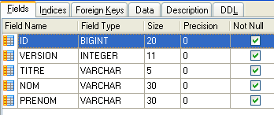 |  |
- ID: número de identificação do cliente — chave primária da tabela
- VERSION: número que identifica a versão da linha na tabela. Esse número é incrementado em 1 sempre que uma modificação é feita na linha.
- NOM: o nome do cliente
- PRENOM: seu nome
- TITRE: seu título (Srta., Sra., Sr.)
2.1.3. A tabela [CRENEAUX]
Ela lista os horários em que os RV são possíveis:
 |
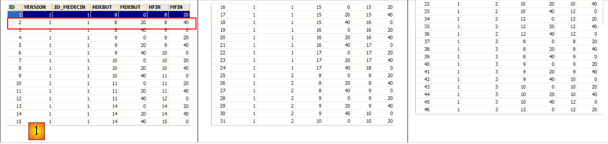 |
- ID: número que identifica o intervalo horário — chave primária da tabela (linha 8)
- VERSION: número que identifica a versão da linha na tabela. Esse número é incrementado em 1 sempre que uma alteração é feita na linha.
- ID_MEDECIN: número que identifica o médico ao qual esse intervalo horário pertence – chave estrangeira na coluna MEDECINS (ID).
- HDEBUT: hora de início do horário
- MDEBUT: minutos de início do horário
- HFIN: hora de término do horário
- MFIN: minutos de término do intervalo
A segunda linha da tabela [CRENEAUX] (ver [1] acima) indica, por exemplo, que o horário nº 2 começa às 8h20 e termina às 8h40 e pertence à médica nº 1 (Sra. Marie PELISSIER).
2.1.4. A tabela [RV]
Ela lista os RV atribuídos a cada médico:
 |
- ID: número que identifica o RV de forma exclusiva – chave primária
- JOUR: dia do RV
- ID_CRENEAU: horário do RV — chave estrangeira no campo [ID] da tabela [CRENEAUX] — define tanto o horário quanto o médico responsável.
- ID_CLIENT: número do cliente para o qual a reserva foi feita – chave estrangeira no campo [ID] da tabela [CLIENTS]
Esta tabela possui uma restrição de unicidade na sobre os valores das colunas associadas (JOUR, ID_CRENEAU):
Se uma linha da tabela [RV] tiver o valor (JOUR1, ID_CRENEAU1) para as colunas (JOUR, ID_CRENEAU), esse valor não pode aparecer em nenhum outro lugar. Caso contrário, isso significaria que dois RV foram registrados ao mesmo tempo para o mesmo médico. Do ponto de vista da programação em Java, o driver JDBC do banco de dados aciona um SQLException quando esse caso ocorre.
A linha de id igual a 3 (ver [1] acima) significa que um RV foi agendado para o horário nº 20 e o cliente nº 4 em 23/08/2006. A tabela [CRENEAUX] nos informa que o horário n.º 20 corresponde ao intervalo das 16h20 às 16h40 e pertence à médica n.º 1 (Sra. Marie PELISSIER). A tabela [CLIENTS] nos informa que o cliente nº 4 é a Srta. Brigitte BISTROU.
2.2. Introdução ao Spring Data
Vamos implementar a camada [DAO] do projeto com o Spring Data, um ramo do ecossistema Spring.
 |
No site do Spring, há vários tutoriais para começar a usar o Spring [http://spring.io/guides]. Vamos usar um deles para apresentar o Spring Data. Para isso, utilizaremos o Spring Tool Suite (STS).
 |
- no [1], importamos um dos tutoriais do [spring.io/guides];
 |
- no [2], selecionamos o tutorial [Accessing Data Jpa], que mostra como acessar um banco de dados com o Spring Data;
- em [3], escolhe-se um projeto configurado pelo Maven;
- em [4], o tutorial pode ser fornecido de duas formas: [initial], que é uma versão vazia a ser preenchida seguindo o tutorial, ou [complete], que é a versão final do tutorial. Escolhemos esta última;
- em [5], é possível optar por visualizar o tutorial em um navegador;
- em [6], o projeto final.
2.2.1. A configuração do Maven para o projeto
As dependências do Maven do projeto são configuradas no arquivo [pom.xml]:
<groupId>org.springframework</groupId>
<artifactId>gs-accessing-data-jpa</artifactId>
<version>0.1.0</version>
<parent>
<groupId>org.springframework.boot</groupId>
<artifactId>spring-boot-starter-parent</artifactId>
<version>1.0.2.RELEASE</version>
</parent>
<dependencies>
<dependency>
<groupId>org.springframework.boot</groupId>
<artifactId>spring-boot-starter-data-jpa</artifactId>
</dependency>
<dependency>
<groupId>com.h2database</groupId>
<artifactId>h2</artifactId>
</dependency>
</dependencies>
<properties>
<!-- use UTF-8 para tudo -->
<project.build.sourceEncoding>UTF-8</project.build.sourceEncoding>
<project.reporting.outputEncoding>UTF-8</project.reporting.outputEncoding>
<start-class>hello.Application</start-class>
</properties>
- linhas 5-9: definem um projeto pai do Maven. É ele que define a maior parte das dependências do projeto. Elas podem ser suficientes, caso em que não se adicionam mais, ou não, caso em que se adicionam as dependências que faltam;
- linhas 12-15: definem uma dependência do [spring-boot-starter-data-jpa]. Esse artefato contém as classes do Spring Data;
- linhas 16-19: definem uma dependência do SGBD e do H2, que permitem criar e gerenciar bancos de dados em memória.
Vejamos as classes fornecidas por essas dependências:
 |  |  |
São muitas:
- algumas pertencem ao ecossistema Spring (aquelas que começam com “spring”);
- outras pertencem ao ecossistema Hibernate (hibernate, jboss), cuja implementação JPA é utilizada aqui;
- outras são bibliotecas de testes (junit, hamcrest);
- outras são bibliotecas de logs (log4j, logback, slf4j);
Vamos manter todas elas. Para uma aplicação em produção, seria necessário manter apenas as que são necessárias.
Na linha 26 do arquivo [pom.xml], encontramos a linha:
<start-class>hello.Application</start-class>
Essa linha está relacionada às seguintes:
<build>
<plugins>
<plugin>
<artifactId>maven-compiler-plugin</artifactId>
</plugin>
<plugin>
<groupId>org.springframework.boot</groupId>
<artifactId>spring-boot-maven-plugin</artifactId>
</plugin>
</plugins>
</build>
Nas linhas 6 a 9, o plug-in [spring-boot-maven-plugin] permite gerar o arquivo JAR executável da aplicação. A linha 26 do arquivo [pom.xml] indica, então, a classe executável desse JAR.
2.2.2. A camada [JPA]
O acesso ao banco de dados é feito por meio de uma camada [JPA], Java Persistence API:
 |
 |
A aplicação é básica e gerencia clientes [Customer]. A classe [Customer] faz parte da camada [JPA] e é a seguinte:
package hello;
import javax.persistence.Entity;
import javax.persistence.GeneratedValue;
import javax.persistence.GenerationType;
import javax.persistence.Id;
@Entity
public class Customer {
@Id
@GeneratedValue(strategy = GenerationType.AUTO)
private long id;
private String firstName;
private String lastName;
protected Customer() {
}
public Customer(String firstName, String lastName) {
this.firstName = firstName;
this.lastName = lastName;
}
@Override
public String toString() {
return String.format("Customer[id=%d, firstName='%s', lastName='%s']", id, firstName, lastName);
}
}
Um cliente possui um identificador [id], um nome próprio [firstName] e um sobrenome [lastName]. Cada instância [Customer] representa uma linha de uma tabela do banco de dados.
- linha 8: anotação JPA que faz com que a persistência das instâncias [Customer] (Create, Read, Update, Delete) seja gerenciada por uma implementação JPA. De acordo com as dependências do Maven, percebe-se que é utilizada a implementação JPA / Hibernate;
- linhas 11-12: anotações JPA que associam o campo [id] à chave primária da tabela [Customer]. A linha 12 indica que a implementação JPA utilizará o método de geração de chave primária específico do SGBD utilizado, neste caso, o H2;
Não há outras anotações para JPA. Nesse caso, serão utilizados valores padrão:
- a tabela [Customer] terá o nome da classe, ou seja, [Customer];
- as colunas dessa tabela terão os nomes dos campos da classe: [id, firstName, lastName], considerando que a distinção entre maiúsculas e minúsculas não é levada em conta no nome de uma coluna de tabela;
Observe-se que, em nenhum momento, a implementação JPA utilizada é nomeada.
2.2.3. A camada [DAO]
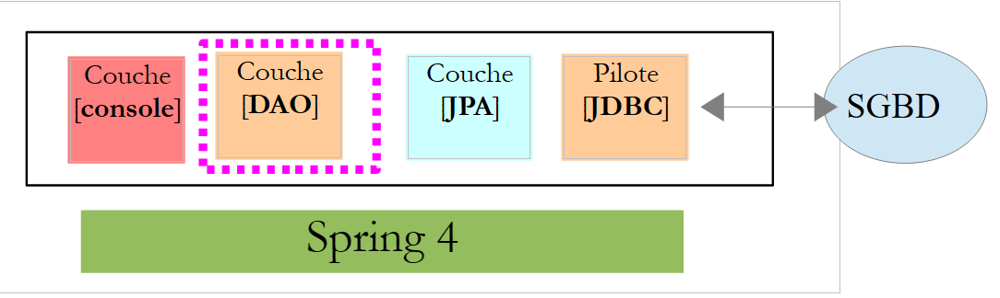 |
 |
A classe [CustomerRepository] implementa a camada [DAO]. Seu código é o seguinte:
package hello;
import java.util.List;
import org.springframework.data.repository.CrudRepository;
public interface CustomerRepository extends CrudRepository<Customer, Long> {
List<Customer> findByLastName(String lastName);
}
Trata-se, portanto, de uma interface e não de uma classe (linha 7). Ela estende a interface [CrudRepository], uma interface do Spring Data (linha 5). Essa interface é definida por dois tipos: o primeiro é o tipo dos elementos gerenciados, neste caso o tipo [Customer]; o segundo é o tipo da chave primária dos elementos gerenciados, neste caso o tipo [Long]. A interface [CrudRepository] é a seguinte:
package org.springframework.data.repository;
import java.io.Serializable;
@NoRepositoryBean
public interface CrudRepository<T, ID extends Serializable> extends Repository<T, ID> {
<S extends T> S save(S entity);
<S extends T> Iterable<S> save(Iterable<S> entities);
T findOne(ID id);
boolean exists(ID id);
Iterable<T> findAll();
Iterable<T> findAll(Iterable<ID> ids);
long count();
void delete(ID id);
void delete(T entity);
void delete(Iterable<? extends T> entities);
void deleteAll();
}
Essa interface define as operações CRUD (Criar – Ler – Atualizar – Excluir) que podem ser realizadas em um tipo JPA T:
- linha 8: o método
savepermite persistir uma entidadeTno banco de dados. Ele persiste a entidade com a chave primária atribuída pelo SGBD. Ele também permite atualizar uma entidadeTidentificada por sua chave primáriaid. A escolha entre uma ou outra ação depende do valor da chave primária id: se este for nulo, ocorre a operação de persistência; caso contrário, ocorre a operação de atualização; - linha 10: o mesmo, mas para uma lista de entidades;
- linha 12: o método findOne permite recuperar uma entidade T identificada por sua chave primária id;
- linha 22: o método delete permite excluir uma entidade T identificada por sua chave primária id;
- linhas 24-28: variantes do método [delete];
- linha 16: o método [findAll] permite recuperar todas as entidades T persistentes;
- linha 18: o mesmo, mas limitado às entidades cuja lista de identificadores foi passada;
Voltemos à interface [CustomerRepository]:
package hello;
import java.util.List;
import org.springframework.data.repository.CrudRepository;
public interface CustomerRepository extends CrudRepository<Customer, Long> {
List<Customer> findByLastName(String lastName);
}
- a linha 9 permite recuperar um [Customer] pelo seu nome [lastName];
E isso é tudo para a camada [DAO]. Não há classe de implementação da interface anterior. Ela é gerada em tempo de execução pelo [Spring Data]. Os métodos da interface [CrudRepository] são implementados automaticamente. Quanto aos métodos adicionados à interface [CustomerRepository], isso depende. Voltemos à definição de [Customer]:
private long id;
private String firstName;
private String lastName;
O método da linha 9 é implementado automaticamente por [Spring Data] porque faz referência ao campo [lastName] (linha 3) de [Customer]. Quando encontra um método [findBySomething] na interface a ser implementada, o Spring Data o implementa por meio da seguinte consulta JPQL (Java Persistence Query Language):
Portanto, é necessário que o tipo T possua um campo chamado [something]. Assim, o método
será implementado por um código semelhante ao seguinte:
return [em].createQuery("select c from Customer c where c.lastName=:value").setParameter("value",lastName).getResultList()
onde [em] designa o contexto de persistência JPA. Isso só é possível se a classe [Customer] tiver um campo chamado [lastName], o que de fato ocorre.
Concluindo, em casos simples, o Spring Data nos permite implementar a camada [DAO] com uma interface simples.
2.2.4. A camada [console]
 |
 |
A classe [Application] é a seguinte:
package hello;
import java.util.List;
import org.springframework.boot.SpringApplication;
import org.springframework.boot.autoconfigure.EnableAutoConfiguration;
import org.springframework.context.ConfigurableApplicationContext;
import org.springframework.context.annotation.Configuration;
@Configuration
@EnableAutoConfiguration
public class Application {
public static void main(String[] args) {
ConfigurableApplicationContext context = SpringApplication.run(Application.class);
CustomerRepository repository = context.getBean(CustomerRepository.class);
// salvar alguns clientes
repository.save(new Customer("Jack", "Bauer"));
repository.save(new Customer("Chloe", "O'Brian"));
repository.save(new Customer("Kim", "Bauer"));
repository.save(new Customer("David", "Palmer"));
repository.save(new Customer("Michelle", "Dessler"));
// buscar todos os clientes
Iterable<Customer> customers = repository.findAll();
System.out.println("Customers found with findAll():");
System.out.println("-------------------------------");
for (Customer customer : customers) {
System.out.println(customer);
}
System.out.println();
// buscar um cliente específico por ID
Customer customer = repository.findOne(1L);
System.out.println("Customer found with findOne(1L):");
System.out.println("--------------------------------");
System.out.println(customer);
System.out.println();
// buscar clientes pelo sobrenome
List<Customer> bauers = repository.findByLastName("Bauer");
System.out.println("Customer found with findByLastName('Bauer'):");
System.out.println("--------------------------------------------");
for (Customer bauer : bauers) {
System.out.println(bauer);
}
context.close();
}
}
- na linha 10: indica que a classe serve para configurar o Spring. As versões recentes do Spring podem, de fato, ser configuradas em Java em vez de em XML. Os dois métodos podem ser usados simultaneamente. No código de uma classe com a anotação [Configuration], normalmente encontram-se beans do Spring, ou seja, definições de classes a serem instanciadas. Aqui, nenhum bean está definido. É importante lembrar que, ao trabalhar com um SGBD, vários beans do Spring devem ser definidos:
- um [EntityManagerFactory] que define a implementação JPA a ser utilizada,
- um [DataSource] que define a fonte de dados a ser utilizada,
- um [TransactionManager] que define o gerenciador de transações a ser utilizado;
Aqui, nenhum desses beans está definido.
- na linha 11: a anotação [EnableAutoConfiguration] é uma anotação proveniente do projeto [Spring Boot] (linhas 5-6). Essa anotação solicita ao Spring Boot, por meio da classe [SpringApplication] (linha 16), que configure a aplicação de acordo com as bibliotecas encontradas em seu Classpath. Como as bibliotecas do Hibernate estão no Classpath, o bean [entityManagerFactory] será implementado com o Hibernate. Como a biblioteca SGBD H2 está no Classpath, o bean [dataSource] será implementado com H2. No bean [dataSource], também é necessário definir o usuário e sua senha. Aqui, o Spring Boot utilizará o administrador padrão do H2, que não possui senha. Como a biblioteca [spring-tx] está no Classpath, será utilizado o gerenciador de transações do Spring.
Além disso, a pasta na qual se encontra a classe [Application] será verificada em busca de beans reconhecidos implicitamente pelo Spring ou definidos explicitamente por anotações do Spring. Assim, as classes [Customer] e [CustomerRepository] serão inspecionadas. Como a primeira possui a anotação [@Entity], ela será catalogada como uma entidade a ser gerenciada pelo Hibernate. Como a segunda estende a interface [CrudRepository], ela será registrada como um bean do Spring.
Vamos examinar as linhas 16 e 17 do código:
ConfigurableApplicationContext context = SpringApplication.run(Application.class);
CustomerRepository repository = context.getBean(CustomerRepository.class);
- linha 1: o método estático [run] da classe [SpringApplication] do projeto Spring Boot é executado. Seu parâmetro é a classe que possui uma anotação [Configuration] ou [EnableAutoConfiguration]. Tudo o que foi explicado anteriormente ocorrerá então. O resultado é um contexto de aplicação Spring, ou seja, um conjunto de beans gerenciados pelo Spring;
- linha 17: solicitamos a esse contexto Spring um bean que implemente a interface [CustomerRepository]. Aqui, recuperamos a classe gerada pelo Spring Data para implementar essa interface.
As operações a seguir limitam-se a utilizar os métodos do bean que implementa a interface [CustomerRepository]. Observe, na linha 50, que o contexto é fechado. Os resultados na console são os seguintes:
- linhas 1-8: o logotipo do projeto Spring Boot;
- linha 9: a classe [hello.Application] é executada;
- linha 10: [AnnotationConfigApplicationContext] é uma classe que implementa a interface [ApplicationContext] do Spring. Trata-se de um contêiner de beans;
- linha 11: o bean [entityManagerFactory] é implementado pela classe [LocalContainerEntityManagerFactory], uma classe do Spring;
- linha 12: surge [hibernate]. Foi essa implementação, JPA, que foi escolhida;
- linha 19: um dialeto do Hibernate é a variante SQL a ser usada com o SGBD. Aqui, o dialeto [H2Dialect] indica que o Hibernate trabalhará com o SGBD e o H2;
- linhas 22-24: a tabela [CUSTOMER] é criada. Isso significa que o Hibernate foi configurado para gerar as tabelas a partir das definições JPA; neste caso, a definição JPA da classe [Customer];
- linhas 27-32: logs do Hibernate que mostram as inserções de linhas na tabela [CUSTOMER]. Isso significa que o Hibernate foi configurado para gerar logs;
- linhas 35-39: os cinco clientes inseridos;
- linhas 42-44: resultado do método [findOne] da interface;
- linhas 47-50: resultados do método [findByLastName];
- linhas 51 e seguintes: logs do fechamento do contexto Spring.
2.2.5. Configuração manual do projeto Spring Data
Duplicamos o projeto anterior no projeto [gs-accessing-data-jpa-2]:
 |
Neste novo projeto, não vamos utilizar a configuração automática feita pelo Spring Boot. Vamos fazê-la manualmente. Isso pode ser útil caso as configurações padrão não sejam adequadas para nós.
Primeiramente, vamos especificar as dependências necessárias no arquivo [pom.xml]:
<dependencies>
<!-- Spring Core -->
<dependency>
<groupId>org.springframework</groupId>
<artifactId>spring-core</artifactId>
<version>4.0.5.RELEASE</version>
</dependency>
<dependency>
<groupId>org.springframework</groupId>
<artifactId>spring-context</artifactId>
<version>4.0.5.RELEASE</version>
</dependency>
<dependency>
<groupId>org.springframework</groupId>
<artifactId>spring-beans</artifactId>
<version>4.0.5.RELEASE</version>
</dependency>
<!-- Transações do Spring -->
<dependency>
<groupId>org.springframework</groupId>
<artifactId>spring-aop</artifactId>
<version>4.0.5.RELEASE</version>
</dependency>
<dependency>
<groupId>org.springframework</groupId>
<artifactId>spring-tx</artifactId>
<version>4.0.5.RELEASE</version>
</dependency>
<!-- Spring Data -->
<dependency>
<groupId>org.springframework.data</groupId>
<artifactId>spring-data-jpa</artifactId>
<version>1.5.2.RELEASE</version>
</dependency>
<!-- Spring Boot -->
<dependency>
<groupId>org.springframework.boot</groupId>
<artifactId>spring-boot</artifactId>
<version>1.0.2.RELEASE</version>
</dependency>
<!-- Hibernate -->
<dependency>
<groupId>org.hibernate</groupId>
<artifactId>hibernate-entitymanager</artifactId>
<version>4.3.4.Final</version>
</dependency>
<!-- H2 Banco de dados -->
<dependency>
<groupId>com.h2database</groupId>
<artifactId>h2</artifactId>
<version>1.4.178</version>
</dependency>
<!-- Commons DBCP -->
<dependency>
<groupId>commons-dbcp</groupId>
<artifactId>commons-dbcp</artifactId>
<version>1.4</version>
</dependency>
<dependency>
<groupId>commons-pool</groupId>
<artifactId>commons-pool</artifactId>
<version>1.6</version>
</dependency>
</dependencies>
- linhas 3-17: as bibliotecas básicas do Spring;
- linhas 19-28: as bibliotecas do Spring para gerenciar transações com um banco de dados;
- linhas 30-34: Spring Data, usado para acessar o banco de dados;
- linhas 36-40: Spring Boot para iniciar a aplicação;
- linhas 48-52: o SGBD H2;
- linhas 54-63: os bancos de dados são frequentemente utilizados com pools de conexões abertas, o que evita a abertura e o fechamento repetidos de conexões. Aqui, a implementação utilizada é a do [commons-dbcp];
Ainda no [pom.xml], altera-se o nome da classe executável:
<properties>
...
<start-class>demo.console.Main</start-class>
</properties>
No novo projeto, a entidade [Customer] e a interface [CustomerRepository] permanecem inalteradas. Vamos alterar a classe [Application], que será dividida em duas classes:
- [Config], que será a classe de configuração:
- [Main], que será a classe executável;
 |
A classe executável [Main] é a mesma de antes, sem as anotações de configuração:
package demo.console;
import java.util.List;
import org.springframework.boot.SpringApplication;
import org.springframework.context.ConfigurableApplicationContext;
import demo.config.Config;
import demo.entities.Customer;
import demo.repositories.CustomerRepository;
public class Main {
public static void main(String[] args) {
ConfigurableApplicationContext context = SpringApplication.run(Config.class);
CustomerRepository repository = context.getBean(CustomerRepository.class);
...
context.close();
}
}
- linha 12: a classe [Main] não possui mais anotações de configuração;
- linha 16: o aplicativo é iniciado com o Spring Boot. O parâmetro [Config.class] é a nova classe de configuração do projeto;
A classe [Config] que configura o projeto é a seguinte:
package demo.config;
import javax.persistence.EntityManagerFactory;
import javax.sql.DataSource;
import org.apache.commons.dbcp.BasicDataSource;
import org.springframework.context.annotation.Bean;
import org.springframework.context.annotation.Configuration;
import org.springframework.data.jpa.repository.config.EnableJpaRepositories;
import org.springframework.orm.jpa.JpaTransactionManager;
import org.springframework.orm.jpa.JpaVendorAdapter;
import org.springframework.orm.jpa.LocalContainerEntityManagerFactoryBean;
import org.springframework.orm.jpa.vendor.Database;
import org.springframework.orm.jpa.vendor.HibernateJpaVendorAdapter;
import org.springframework.transaction.PlatformTransactionManager;
import org.springframework.transaction.annotation.EnableTransactionManagement;
//@ComponentScan(basePackages = { "demo" })
//@EntityScan(basePackages = { "demo.entities" })
@EnableTransactionManagement
@EnableJpaRepositories(basePackages = { "demo.repositories" })
@Configuration
public class Config {
// a fonte de dados H2
@Bean
public DataSource dataSource() {
BasicDataSource dataSource = new BasicDataSource();
dataSource.setDriverClassName("org.h2.Driver");
dataSource.setUrl("jdbc:h2:./demo");
dataSource.setUsername("sa");
dataSource.setPassword("");
return dataSource;
}
// o provedor JPA
@Bean
public JpaVendorAdapter jpaVendorAdapter() {
HibernateJpaVendorAdapter hibernateJpaVendorAdapter = new HibernateJpaVendorAdapter();
hibernateJpaVendorAdapter.setShowSql(false);
hibernateJpaVendorAdapter.setGenerateDdl(true);
hibernateJpaVendorAdapter.setDatabase(Database.H2);
return hibernateJpaVendorAdapter;
}
// EntityManagerFactory
@Bean
public EntityManagerFactory entityManagerFactory(JpaVendorAdapter jpaVendorAdapter, DataSource dataSource) {
LocalContainerEntityManagerFactoryBean factory = new LocalContainerEntityManagerFactoryBean();
factory.setJpaVendorAdapter(jpaVendorAdapter);
factory.setPackagesToScan("demo.entities");
factory.setDataSource(dataSource);
factory.afterPropertiesSet();
return factory.getObject();
}
// Gerenciador de transações
@Bean
public PlatformTransactionManager transactionManager(EntityManagerFactory entityManagerFactory) {
JpaTransactionManager txManager = new JpaTransactionManager();
txManager.setEntityManagerFactory(entityManagerFactory);
return txManager;
}
}
- linha 22: a anotação [@Configuration] transforma a classe [Config] em uma classe de configuração do Spring;
- linha 21: a anotação [@EnableJpaRepositories] permite indicar as pastas onde se encontram as interfaces Spring Data [CrudRepository]. Essas interfaces se tornarão componentes Spring e estarão disponíveis em seu contexto;
- linha 20: a anotação [@EnableTransactionManagement] indica que os métodos das interfaces [CrudRepository] devem ser executados dentro de uma transação;
- linha 19: a anotação [@EntityScan] permite especificar as pastas onde as entidades JPA devem ser procuradas. Aqui, ela foi colocada entre comentários, pois essa informação já foi fornecida explicitamente na linha 50. Essa anotação deve estar presente se for utilizado o modo [@EnableAutoConfiguration] e as entidades JPA não estiverem na mesma pasta que a classe de configuração;
- linha 18: a anotação [@ComponentScan] permite listar as pastas onde os componentes Spring devem ser procurados. Os componentes Spring são classes marcadas com anotações Spring, como @Service, @Component, @Controller, etc. Aqui, não há outros além daqueles definidos na classe [Config]; por isso, a anotação foi colocada entre comentários;
- linhas 25-33: definem a fonte de dados, o banco de dados H2. É a anotação @Bean da linha 25 que torna o objeto criado por esse método um componente gerenciado pelo Spring. O nome do método pode ser qualquer um aqui. No entanto, ele deve ser chamado de [dataSource] se o EntityManagerFactory da linha 47 estiver ausente e for definido por autoconfiguração;
- linha 29: o banco de dados se chamará [demo] e será gerado na pasta do projeto;
- linhas 36-43: definem a implementação JPA utilizada, neste caso, uma implementação do Hibernate. O nome do método pode ser qualquer um;
- linha 39: sem logs SQL;
- linha 30: o banco de dados será criado caso não exista;
- linhas 46-54: definem o EntityManagerFactory que irá gerenciar a persistência JPA. O método deve se chamar obrigatoriamente [entityManagerFactory];
- linha 47: o método recebe dois parâmetros com o tipo dos dois beans definidos anteriormente. Estes serão então instanciados e injetados pelo Spring como parâmetros do método;
- linha 49: define a implementação JPA a ser utilizada;
- linha 50: define as pastas onde se encontram as entidades JPA;
- linha 51: define a fonte de dados a ser gerenciada;
- linhas 57-62: o gerenciador de transações. O método deve se chamar obrigatoriamente [transactionManager]. Ele recebe como parâmetro o bean das linhas 46-54;
- linha 60: o gerenciador de transações é associado ao EntityManagerFactory;
Os métodos anteriores podem ser definidos em qualquer ordem.
A execução do projeto produz os mesmos resultados. Um novo arquivo aparece na pasta do projeto, o do banco de dados H2:
 |
Por fim, é possível dispensar o Spring Boot. Cria-se uma segunda classe executável, [Main2]:
 |
A classe [Main2] possui o seguinte código:
package demo.console;
import java.util.List;
import org.springframework.context.annotation.AnnotationConfigApplicationContext;
import demo.config.Config;
import demo.entities.Customer;
import demo.repositories.CustomerRepository;
public class Main2 {
public static void main(String[] args) {
AnnotationConfigApplicationContext context = new AnnotationConfigApplicationContext(Config.class);
CustomerRepository repository = context.getBean(CustomerRepository.class);
....
context.close();
}
}
- linha 15: a classe de configuração [Config] agora é utilizada pela classe Spring [AnnotationConfigApplicationContext]. Pode-se observar na linha 5 que agora não há mais dependência do Spring Boot.
A execução produz os mesmos resultados que anteriormente.
2.2.6. Criação de um arquivo executável
Para criar um arquivo executável do projeto, pode-se proceder da seguinte forma:
 |
- em [1]: cria-se uma configuração de execução;
- em [2]: do tipo [Java Application]
- em [3]: indica o projeto a ser executado (use o botão Browse);
- em [4]: indica a classe a ser executada;
- em [5]: o nome da configuração de execução – pode ser qualquer um;
 |
- em [6]: exporta-se o projeto;
- em [7]: na forma de um arquivo executável JAR;
- em [8]: indica o caminho e o nome do arquivo executável a ser criado;
- em [9]: o nome da configuração de execução criada em [5];
Feito isso, abre-se um terminal na pasta que contém o arquivo executável:
O arquivo é executado da seguinte maneira:
.....\dist>java -jar gs-accessing-data-jpa-2.jar
Os resultados obtidos no terminal são os seguintes:
2.2.7. Criar um novo projeto Spring Data
Para criar um esqueleto de projeto Spring Data, pode-se proceder da seguinte maneira:
 |
- em [1], crie um novo projeto;
- em [2]: do tipo [Spring Starter Project];
- o projeto gerado será um projeto Maven. Em [3], indica-se o nome do grupo do projeto;
- no [4]: indica-se o nome do artefato (um jar, neste caso) que será criado durante a compilação do projeto;
- em [5]: indica-se o pacote da classe executável que será criada no projeto;
- em [6]: o nome do projeto no Eclipse – pode ser qualquer um (não precisa ser idêntico a [4]);
- em [7]: indica-se que será criado um projeto com uma camada [JPA]. As dependências necessárias para tal projeto serão, então, incluídas no arquivo [pom.xml];
 |
- em [8]: o projeto criado;
O arquivo [pom.xml] integra as dependências necessárias para um projeto JPA:
<parent>
<groupId>org.springframework.boot</groupId>
<artifactId>spring-boot-starter-parent</artifactId>
<version>1.1.0.RELEASE</version>
<relativePath/> <!-- pesquisar pai no repositório -->
</parent>
<dependencies>
<dependency>
<groupId>org.springframework.boot</groupId>
<artifactId>spring-boot-starter-data-jpa</artifactId>
</dependency>
<dependency>
<groupId>org.springframework.boot</groupId>
<artifactId>spring-boot-starter-test</artifactId>
<scope>test</scope>
</dependency>
</dependencies>
- linhas 9-12: as dependências necessárias para o JPA – incluirão o [Spring Data];
- linhas 13-17: as dependências necessárias para os testes JUnit integrados com o Spring;
A classe executável [Application] não faz nada, mas está pré-configurada:
package istia.st;
import org.springframework.boot.SpringApplication;
import org.springframework.boot.autoconfigure.EnableAutoConfiguration;
import org.springframework.context.annotation.ComponentScan;
import org.springframework.context.annotation.Configuration;
@Configuration
@ComponentScan
@EnableAutoConfiguration
public class Application {
public static void main(String[] args) {
SpringApplication.run(Application.class, args);
}
}
A classe de testes [ApplicationTests] não executa nenhuma ação, mas está pré-configurada:
package istia.st;
import org.junit.Test;
import org.junit.runner.RunWith;
import org.springframework.boot.test.SpringApplicationConfiguration;
import org.springframework.test.context.junit4.SpringJUnit4ClassRunner;
@RunWith(SpringJUnit4ClassRunner.class)
@SpringApplicationConfiguration(classes = Application.class)
public class ApplicationTests {
@Test
public void contextLoads() {
}
}
- linha 9: a anotação [@SpringApplicationConfiguration] permite utilizar o arquivo de configuração [Application]. Assim, a classe de teste terá acesso a todos os beans definidos nesse arquivo;
- linha 8: a anotação [@RunWith] permite a integração do Spring com JUnit: a classe poderá ser executada como um teste JUnit. [@RunWith] é uma anotação JUnit (linha 4), enquanto a classe [SpringJUnit4ClassRunner] é uma classe Spring (linha 6);
Agora que temos um esboço da aplicação JPA, podemos completá-lo para escrever o projeto da camada de persistência do servidor da nossa aplicação de gerenciamento de agendamentos.
2.3. O projeto Eclipse do servidor
 |
 |
Os principais elementos do projeto são os seguintes:
- [pom.xml]: arquivo de configuração Maven do projeto;
- [rdvmedecins.entities]: as entidades JPA;
- [rdvmedecins.repositories]: as interfaces Spring Data para acesso às entidades JPA;
- [rdvmedecins.metier]: a camada [métier];
- [rdvmedecins.domain]: as entidades manipuladas pela camada [métier];
- [rdvmdecins.config]: as classes de configuração da camada de persistência;
- [rdvmedecins.boot]: um aplicativo de console básico;
2.4. A configuração do Maven
 |  |  |
O arquivo [pom.xml] do projeto é o seguinte:
<?xml version="1.0" encoding="UTF-8"?>
<project xmlns="http://maven.apache.org/POM/4.0.0" xsi:schemaLocation="http://maven.apache.org/POM/4.0.0 http://maven.apache.org/maven-v4_0_0.xsd"
xmlns:xsi="http://www.w3.org/2001/XMLSchema-instance">
<modelVersion>4.0.0</modelVersion>
<groupId>istia.st.spring4.rdvmedecins</groupId>
<artifactId>rdvmedecins-metier-dao</artifactId>
<version>0.0.1-SNAPSHOT</version>
<parent>
<groupId>org.springframework.boot</groupId>
<artifactId>spring-boot-starter-parent</artifactId>
<version>1.0.0.RELEASE</version>
</parent>
<dependencies>
<dependency>
<groupId>org.springframework.boot</groupId>
<artifactId>spring-boot-starter-data-jpa</artifactId>
</dependency>
<dependency>
<groupId>org.springframework.boot</groupId>
<artifactId>spring-boot-starter-test</artifactId>
<scope>test</scope>
</dependency>
<dependency>
<groupId>mysql</groupId>
<artifactId>mysql-connector-java</artifactId>
</dependency>
<dependency>
<groupId>commons-dbcp</groupId>
<artifactId>commons-dbcp</artifactId>
</dependency>
<dependency>
<groupId>commons-pool</groupId>
<artifactId>commons-pool</artifactId>
</dependency>
<dependency>
<groupId>com.fasterxml.jackson.core</groupId>
<artifactId>jackson-databind</artifactId>
</dependency>
<dependency>
<groupId>com.google.guava</groupId>
<artifactId>guava</artifactId>
<version>16.0.1</version>
</dependency>
</dependencies>
<properties>
<!-- use UTF-8 para tudo -->
<project.build.sourceEncoding>UTF-8</project.build.sourceEncoding>
<project.reporting.outputEncoding>UTF-8</project.reporting.outputEncoding>
<start-class>istia.st.spring.data.main.Application</start-class>
</properties>
<build>
<plugins>
<plugin>
<artifactId>maven-compiler-plugin</artifactId>
</plugin>
<plugin>
<groupId>org.springframework.boot</groupId>
<artifactId>spring-boot-maven-plugin</artifactId>
</plugin>
</plugins>
</build>
<repositories>
<repository>
<id>spring-milestones</id>
<name>Spring Milestones</name>
<url>http://repo.spring.io/libs-milestone</url>
<snapshots>
<enabled>false</enabled>
</snapshots>
</repository>
<repository>
<id>org.jboss.repository.releases</id>
<name>JBoss Maven Release Repository</name>
<url>https://repository.jboss.org/nexus/content/repositories/releases</url>
<snapshots>
<enabled>false</enabled>
</snapshots>
</repository>
</repositories>
<pluginRepositories>
<pluginRepository>
<id>spring-milestones</id>
<name>Spring Milestones</name>
<url>http://repo.spring.io/libs-milestone</url>
<snapshots>
<enabled>false</enabled>
</snapshots>
</pluginRepository>
</pluginRepositories>
</project>
- linhas 8-12: o projeto se baseia no projeto pai [spring-boot-starter-parent]. Para as dependências já presentes no projeto pai, não se especifica a versão. Será utilizada a versão definida no projeto pai. As demais dependências são declaradas normalmente;
- linhas 14-17: para o Spring Data;
- linhas 18-22: para os testes JUnit;
- linhas 23-26: driver JDBC do SGBD MySQL5;
- linhas 27-34: pool de conexões Commons DBCP;
- linhas 35-38: biblioteca Jackson de gerenciamento do JSON;
- linhas 39-43: biblioteca do Google para gerenciamento de coleções;
A versão 1.1.0.RC1 do [spring-boot-starter-parent] utiliza as seguintes versões das bibliotecas:
2.5. As entidades JPA
 |
As entidades JPA são os objetos que irão encapsular as linhas das tabelas do banco de dados.
 |
A classe [AbstractEntity] é a classe pai das entidades [Personne, Creneau, Rv]. Sua definição é a seguinte:
package rdvmedecins.entities;
import java.io.Serializable;
import javax.persistence.GeneratedValue;
import javax.persistence.GenerationType;
import javax.persistence.Id;
import javax.persistence.MappedSuperclass;
import javax.persistence.Version;
@MappedSuperclass
public class AbstractEntity implements Serializable {
private static final long serialVersionUID = 1L;
@Id
@GeneratedValue(strategy = GenerationType.AUTO)
protected Long id;
@Version
protected Long version;
@Override
public int hashCode() {
int hash = 0;
hash += (id != null ? id.hashCode() : 0);
return hash;
}
// inicialização
public AbstractEntity build(Long id, Long version) {
this.id = id;
this.version = version;
return this;
}
@Override
public boolean equals(Object entity) {
String class1 = this.getClass().getName();
String class2 = entity.getClass().getName();
if (!class2.equals(class1)) {
return false;
}
AbstractEntity other = (AbstractEntity) entity;
return this.id == other.id;
}
// getters e setters
..
}
- linha 11: a anotação [@MappedSuperclass] indica que a classe anotada é pai das entidades JPA e [@Entity];
- linhas 15-17: definem a chave primária [id] de cada entidade. É a anotação [@Id] que torna o campo [id] uma chave primária. A anotação [@GeneratedValue(strategy = GenerationType.AUTO)] indica que o valor dessa chave primária é gerado pelo SGBD e que nenhum modo de geração é imposto;
- linhas 18-19: definem a versão de cada entidade. A implementação JPA incrementará esse número de versão sempre que a entidade for modificada. Esse número serve para impedir a atualização simultânea da entidade por dois usuários diferentes: dois usuários, U1 e U2, leem a entidade E com um número de versão igual a V1. U1 modifica E e grava essa modificação no banco de dados: o número de versão passa então para V1+1. U2, por sua vez, modifica E e grava essa modificação no banco de dados: ele receberá uma exceção, pois possui uma versão (V1) diferente daquela no banco de dados (V1+1);
- linhas 29-33: o método [build] permite inicializar os dois campos de [AbstractEntity]. Esse método torna a referência da instância [AbstractEntity] assim inicializada;
- linhas 36-44: o método [equals] da classe é redefinido: duas entidades serão consideradas iguais se tiverem o mesmo nome de classe e o mesmo identificador id;
A entidade [Personne] é a classe pai das entidades [Medecin] e [Client]:
package rdvmedecins.entities;
import javax.persistence.Column;
import javax.persistence.MappedSuperclass;
@MappedSuperclass
public class Personne extends AbstractEntity {
private static final long serialVersionUID = 1L;
// atributos de uma pessoa
@Column(length = 5)
private String titre;
@Column(length = 20)
private String nom;
@Column(length = 20)
private String prenom;
// construtor padrão
public Personne() {
}
// construtor com parâmetros
public Personne(String titre, String nom, String prenom) {
this.titre = titre;
this.nom = nom;
this.prenom = prenom;
}
// toString
public String toString() {
return String.format("Personne[%s, %s, %s, %s, %s]", id, version, titre, nom, prenom);
}
// getters e setters
...
}
- linha 6: a anotação [@MappedSuperclass] indica que a classe anotada é pai das entidades JPA e [@Entity];
- linhas 10-15: uma pessoa possui um título (Srta.), um nome próprio (Jacqueline) e um sobrenome (Tatou). Não há informações sobre as colunas da tabela. Portanto, por padrão, elas terão os mesmos nomes dos campos;
A entidade [Medecin] é a seguinte:
package rdvmedecins.entities;
import javax.persistence.Entity;
import javax.persistence.Table;
@Entity
@Table(name = "medecins")
public class Medecin extends Personne {
private static final long serialVersionUID = 1L;
// construtor padrão
public Medecin() {
}
// construtor com parâmetros
public Medecin(String titre, String nom, String prenom) {
super(titre, nom, prenom);
}
public String toString() {
return String.format("Medecin[%s]", super.toString());
}
}
- linha 6: a classe é uma entidade JPA;
- linha 7: associada à tabela [MEDECINS] do banco de dados;
- linha 8: a entidade [Medecin] deriva da entidade [Personne];
Um médico poderá ser inicializado da seguinte forma:
Além disso, se quisermos atribuir a ele um identificador e uma versão, poderemos escrever:
onde o método [build] é aquele definido em [AbstractEntity].
A entidade [Client] é a seguinte:
package rdvmedecins.entities;
import javax.persistence.Entity;
import javax.persistence.Table;
@Entity
@Table(name = "clients")
public class Client extends Personne {
private static final long serialVersionUID = 1L;
// construtor padrão
public Client() {
}
// construtor com parâmetros
public Client(String titre, String nom, String prenom) {
super(titre, nom, prenom);
}
// identidade
public String toString() {
return String.format("Client[%s]", super.toString());
}
}
- linha 6: a classe é uma entidade JPA;
- linha 7: associada à tabela [CLIENTS] do banco de dados;
- linha 8: a entidade [Client] deriva da entidade [Personne];
A entidade [Creneau] é a seguinte:
package rdvmedecins.entities;
import javax.persistence.Column;
import javax.persistence.Entity;
import javax.persistence.FetchType;
import javax.persistence.JoinColumn;
import javax.persistence.ManyToOne;
import javax.persistence.Table;
@Entity
@Table(name = "creneaux")
public class Creneau extends AbstractEntity {
private static final long serialVersionUID = 1L;
// características de um horário de RV
private int hdebut;
private int mdebut;
private int hfin;
private int mfin;
// um horário está vinculado a um médico
@ManyToOne(fetch = FetchType.LAZY)
@JoinColumn(name = "id_medecin")
private Medecin medecin;
// chave estrangeira
@Column(name = "id_medecin", insertable = false, updatable = false)
private long idMedecin;
// construtor padrão
public Creneau() {
}
// construtor com parâmetros
public Creneau(Medecin medecin, int hdebut, int mdebut, int hfin, int mfin) {
this.medecin = medecin;
this.hdebut = hdebut;
this.mdebut = mdebut;
this.hfin = hfin;
this.mfin = mfin;
}
// toString
public String toString() {
return String.format("Créneau[%d, %d, %d, %d:%d, %d:%d]", id, version, idMedecin, hdebut, mdebut, hfin, mfin);
}
// chave estrangeira
public long getIdMedecin() {
return idMedecin;
}
// setter e getter
...
}
- linha 10: a classe é uma entidade JPA;
- linha 11: associada à tabela [CRENEAUX] do banco de dados;
- linha 12: a entidade [Creneau] deriva da entidade [AbstractEntity] e, portanto, herda o identificador [id] e a versão [version];
- linha 16: hora de início do intervalo (14);
- linha 17: minutos de início do intervalo (20);
- linha 18: hora de término do intervalo (14);
- linha 19: minutos de término do horário (40);
- linhas 22-24: o médico responsável pelo horário. A tabela [CRENEAUX] possui uma chave estrangeira na tabela [MEDECINS]. Essa relação é representada pelas linhas 22-24;
- linha 22: a anotação [@ManyToOne] indica uma relação de muitos (horários) para um (médico). O atributo [fetch=FetchType.LAZY] indica que, quando se solicita uma entidade [Creneau] ao contexto de persistência e esta precisa ser buscada no banco de dados, a entidade [Medecin] não é retornada junto com ela. A vantagem desse modo é que a entidade [Medecin] só é pesquisada se o desenvolvedor solicitar. Assim, economiza-se memória e ganha-se em desempenho;
- linha 23: indica o nome da coluna da chave estrangeira na tabela [CRENEAUX];
- linhas 27-28: a chave estrangeira na tabela [MEDECINS];
- linha 27: a coluna [ID_MEDECIN] já foi utilizada na linha 23. Isso significa que ela pode ser modificada por dois caminhos diferentes, o que não é permitido pela norma JPA. Portanto, adicionamos os atributos [insertable = false, updatable = false], o que faz com que a coluna só possa ser lida;
A entidade [Rv] é a seguinte:
package rdvmedecins.entities;
import java.util.Date;
import javax.persistence.Column;
import javax.persistence.Entity;
import javax.persistence.FetchType;
import javax.persistence.JoinColumn;
import javax.persistence.ManyToOne;
import javax.persistence.Table;
import javax.persistence.Temporal;
import javax.persistence.TemporalType;
@Entity
@Table(name = "rv")
public class Rv extends AbstractEntity {
private static final long serialVersionUID = 1L;
// características de um Rv
@Temporal(TemporalType.DATE)
private Date jour;
// um rv está vinculado a um cliente
@ManyToOne(fetch = FetchType.LAZY)
@JoinColumn(name = "id_client")
private Client client;
// um RV está vinculado a um horário
@ManyToOne(fetch = FetchType.LAZY)
@JoinColumn(name = "id_creneau")
private Creneau creneau;
// chaves externas
@Column(name = "id_client", insertable = false, updatable = false)
private long idClient;
@Column(name = "id_creneau", insertable = false, updatable = false)
private long idCreneau;
// fabricante padrão
public Rv() {
}
// com parâmetros
public Rv(Date jour, Client client, Creneau creneau) {
this.jour = jour;
this.client = client;
this.creneau = creneau;
}
// toString
public String toString() {
return String.format("Rv[%d, %s, %d, %d]", id, jour, client.id, creneau.id);
}
// chaves externas
public long getIdCreneau() {
return idCreneau;
}
public long getIdClient() {
return idClient;
}
// getters e setters
...
}
- linha 14: a classe é uma entidade JPA;
- linha 15: associada à tabela [RV] do banco de dados;
- linha 16: a entidade [Rv] deriva da entidade [AbstractEntity] e, portanto, herda o identificador [id] e a versão [version];
- linha 21: a data do compromisso;
- linha 20: o tipo [Date] de Java contém tanto uma data quanto uma hora. Aqui, especifica-se que apenas a data é utilizada;
- linhas 24-26: o cliente para o qual essa consulta foi agendada. A tabela [RV] possui uma chave estrangeira na tabela [CLIENTS]. Essa relação é representada pelas linhas 24-26;
- linhas 29-31: o horário do compromisso. A tabela [RV] possui uma chave estrangeira na tabela [CRENEAUX]. Essa relação é representada pelas linhas 29-31;
- linhas 34-35: a chave estrangeira [idClient];
- linhas 36-37: a chave estrangeira [idCreneau];
2.6. A camada [DAO]
 |
Vamos implementar a camada [DAO] com o Spring Data:
 |
A camada [DAO] é implementada com quatro interfaces do Spring Data:
- [ClientRepository]: fornece acesso às entidades JPA e [Client];
- [CreneauRepository]: dá acesso às entidades JPA e [Creneau];
- [MedecinRepository]: dá acesso às entidades JPA e [Medecin];
- [RvRepository]: dá acesso às entidades JPA e [Rv];
A interface [MedecinRepository] é a seguinte:
package rdvmedecins.repositories;
import org.springframework.data.repository.CrudRepository;
import rdvmedecins.entities.Medecin;
public interface MedecinRepository extends CrudRepository<Medecin, Long> {
}
- linha 7: a interface [MedecinRepository] limita-se a herdar os métodos da interface [CrudRepository], sem adicionar outros;
A interface [ClientRepository] é a seguinte:
package rdvmedecins.repositories;
import org.springframework.data.repository.CrudRepository;
import rdvmedecins.entities.Client;
public interface ClientRepository extends CrudRepository<Client, Long> {
}
- linha 7: a interface [ClientRepository] limita-se a herdar os métodos da interface [CrudRepository], sem adicionar outros;
A interface [CreneauRepository] é a seguinte:
package rdvmedecins.repositories;
import org.springframework.data.jpa.repository.Query;
import org.springframework.data.repository.CrudRepository;
import rdvmedecins.entities.Creneau;
public interface CreneauRepository extends CrudRepository<Creneau, Long> {
// lista de horários de atendimento de um médico
@Query("select c from Creneau c where c.medecin.id=?1")
Iterable<Creneau> getAllCreneaux(long idMedecin);
}
- linha 8: a interface [CreneauRepository] herda os métodos da interface [CrudRepository];
- linhas 10-11: o método [getAllCreneaux] permite obter os horários disponíveis de um médico;
- linha 11: o parâmetro é o identificador do médico. O resultado é uma lista de horários disponíveis na forma de um objeto [Iterable<Creneau>];
- linha 10: a anotação [@Query] permite especificar a consulta JPQL (Java Persistence Query Language) que implementa o método. O parâmetro [?1] será substituído pelo parâmetro [idMedecin] do método;
A interface [RvRepository] é a seguinte:
package rdvmedecins.repositories;
import java.util.Date;
import org.springframework.data.jpa.repository.Query;
import org.springframework.data.repository.CrudRepository;
import rdvmedecins.entities.Rv;
public interface RvRepository extends CrudRepository<Rv, Long> {
@Query("select rv from Rv rv left join fetch rv.client c left join fetch rv.creneau cr where cr.medecin.id=?1 and rv.jour=?2")
Iterable<Rv> getRvMedecinJour(long idMedecin, Date jour);
}
- linha 10: a interface [RvRepository] herda os métodos da interface [CrudRepository];
- linhas 12-13: o método [getRvMedecinJour] permite obter as consultas de um médico para um determinado dia;
- linha 13: os parâmetros são o identificador do médico e o dia. O resultado é uma lista de consultas na forma de um objeto [Iterable<Rv>];
- linha 12: a anotação [@Query] permite especificar a consulta JPQL que implementa o método. O parâmetro [?1] será substituído pelo parâmetro [idMedecin] do método, e o parâmetro [?2] será substituído pelo parâmetro [jour] do método. Não basta utilizar a seguinte consulta JPQL:
pois os campos da classe Rv, dos tipos [Client] e [Creneau], são obtidos no modo [FetchType.LAZY], o que significa que devem ser solicitados explicitamente para serem obtidos. Isso é feito na consulta JPQL com a sintaxe [left join fetch entité], que solicita que seja realizada uma junção com a tabela à qual a chave estrangeira aponta, a fim de recuperar a entidade referenciada;
2.7. A camada [métier]
 |
 |
- [IMetier] é a interface da camada [métier], e [Metier] é sua implementação;
- [AgendaMedecinJour] e [CreneauMedecinJour] são duas entidades de negócio;
2.7.1. As entidades
A entidade [CreneauMedecinJour] associa um intervalo de tempo e o possível compromisso agendado nesse intervalo:
package rdvmedecins.domain;
import java.io.Serializable;
import rdvmedecins.entities.Creneau;
import rdvmedecins.entities.Rv;
public class CreneauMedecinJour implements Serializable {
private static final long serialVersionUID = 1L;
// campos
private Creneau creneau;
private Rv rv;
// construtores
public CreneauMedecinJour() {
}
public CreneauMedecinJour(Creneau creneau, Rv rv) {
this.creneau=creneau;
this.rv=rv;
}
// toString
@Override
public String toString() {
return String.format("[%s %s]", creneau, rv);
}
// getters e setters
...
}
- linha 12: o intervalo horário;
- linha 13: a eventual consulta – null caso contrário;
A entidade [AgendaMedecinJour] é a agenda de um médico para um determinado dia, ou seja, a lista de suas consultas:
package rdvmedecins.domain;
import java.io.Serializable;
import java.text.SimpleDateFormat;
import java.util.Date;
import rdvmedecins.entities.Medecin;
public class AgendaMedecinJour implements Serializable {
private static final long serialVersionUID = 1L;
// campos
private Medecin medecin;
private Date jour;
private CreneauMedecinJour[] creneauxMedecinJour;
// construtores
public AgendaMedecinJour() {
}
public AgendaMedecinJour(Medecin medecin, Date jour, CreneauMedecinJour[] creneauxMedecinJour) {
this.medecin = medecin;
this.jour = jour;
this.creneauxMedecinJour = creneauxMedecinJour;
}
public String toString() {
StringBuffer str = new StringBuffer("");
for (CreneauMedecinJour cr : creneauxMedecinJour) {
str.append(" ");
str.append(cr.toString());
}
return String.format("Agenda[%s,%s,%s]", medecin, new SimpleDateFormat("dd/MM/yyyy").format(jour), str.toString());
}
// getters e setters
...
}
- linha 13: o médico;
- linha 14: o dia na agenda;
- linha 15: seus horários disponíveis, com ou sem consultas marcadas;
2.7.2. O serviço
A interface da camada [métier] é a seguinte:
package rdvmedecins.metier;
import java.util.Date;
import java.util.List;
import rdvmedecins.domain.AgendaMedecinJour;
import rdvmedecins.entities.Client;
import rdvmedecins.entities.Creneau;
import rdvmedecins.entities.Medecin;
import rdvmedecins.entities.Rv;
public interface IMetier {
// lista de clientes
public List<Client> getAllClients();
// lista de médicos
public List<Medecin> getAllMedecins();
// lista de horários disponíveis de um médico
public List<Creneau> getAllCreneaux(long idMedecin);
// lista de consultas de um médico em um determinado dia
public List<Rv> getRvMedecinJour(long idMedecin, Date jour);
// localizar um cliente identificado por seu ID
public Client getClientById(long id);
// localizar um cliente identificado por seu ID
public Medecin getMedecinById(long id);
// encontrar uma consulta identificada pelo seu ID
public Rv getRvById(long id);
// encontrar um horário identificado pelo seu ID
public Creneau getCreneauById(long id);
// adicionar um RV
public Rv ajouterRv(Date jour, Creneau créneau, Client client);
// excluir um RV
public void supprimerRv(Rv rv);
// função
public AgendaMedecinJour getAgendaMedecinJour(long idMedecin, Date jour);
}
Os comentários explicam a função de cada um dos métodos.
A implementação da interface [IMetier] é a seguinte classe [Metier]:
package rdvmedecins.metier;
import java.util.Date;
import java.util.Hashtable;
import java.util.List;
import java.util.Map;
import org.springframework.beans.factory.annotation.Autowired;
import org.springframework.stereotype.Service;
import rdvmedecins.domain.AgendaMedecinJour;
import rdvmedecins.domain.CreneauMedecinJour;
import rdvmedecins.entities.Client;
import rdvmedecins.entities.Creneau;
import rdvmedecins.entities.Medecin;
import rdvmedecins.entities.Rv;
import rdvmedecins.repositories.ClientRepository;
import rdvmedecins.repositories.CreneauRepository;
import rdvmedecins.repositories.MedecinRepository;
import rdvmedecins.repositories.RvRepository;
import com.google.common.collect.Lists;
@Service("métier")
public class Metier implements IMetier {
// repositórios
@Autowired
private MedecinRepository medecinRepository;
@Autowired
private ClientRepository clientRepository;
@Autowired
private CreneauRepository creneauRepository;
@Autowired
private RvRepository rvRepository;
// implementação de interface
@Override
public List<Client> getAllClients() {
return Lists.newArrayList(clientRepository.findAll());
}
@Override
public List<Medecin> getAllMedecins() {
return Lists.newArrayList(medecinRepository.findAll());
}
@Override
public List<Creneau> getAllCreneaux(long idMedecin) {
return Lists.newArrayList(creneauRepository.getAllCreneaux(idMedecin));
}
@Override
public List<Rv> getRvMedecinJour(long idMedecin, Date jour) {
return Lists.newArrayList(rvRepository.getRvMedecinJour(idMedecin, jour));
}
@Override
public Client getClientById(long id) {
return clientRepository.findOne(id);
}
@Override
public Medecin getMedecinById(long id) {
return medecinRepository.findOne(id);
}
@Override
public Rv getRvById(long id) {
return rvRepository.findOne(id);
}
@Override
public Creneau getCreneauById(long id) {
return creneauRepository.findOne(id);
}
@Override
public Rv ajouterRv(Date jour, Creneau créneau, Client client) {
return rvRepository.save(new Rv(jour, client, créneau));
}
@Override
public void supprimerRv(Rv rv) {
rvRepository.delete(rv.getId());
}
public AgendaMedecinJour getAgendaMedecinJour(long idMedecin, Date jour) {
...
}
}
- linha 24: a anotação [@Service] é uma anotação do Spring que transforma a classe anotada em um componente gerenciado pelo Spring. É possível ou não atribuir um nome a um componente. Este foi denominado [métier];
- linha 25: a classe [Metier] implementa a interface [IMetier];
- linha 28: a anotação [@Autowired] é uma anotação do Spring. O valor do campo assim anotado será inicializado (injetado) pelo Spring com a referência de um componente do Spring do tipo ou nome especificados. Aqui, a anotação [@Autowired] não especifica um nome. Portanto, será realizada uma injeção por tipo;
- linha 29: o campo [medecinRepository] será inicializado com a referência a um componente Spring do tipo [MedecinRepository]. Essa será a referência à classe gerada pelo Spring Data para implementar a interface [MedecinRepository] que já apresentamos;
- linhas 30-35: esse processo é repetido para as outras três interfaces analisadas;
- linhas 39-41: implementação do método [getAllClients];
- linha 40: utilizamos o método [findAll] da interface [ClientRepository]. Esse método retorna um tipo [Iterable<Client>], que transformamos em [List<Client>] com o método estático [Lists.newArrayList]. A classe [Lists] está definida na biblioteca Google Guava. Em [pom.xml], essa dependência foi importada:
<dependency>
<groupId>com.google.guava</groupId>
<artifactId>guava</artifactId>
<version>16.0.1</version>
</dependency>
- linhas 38-86: os métodos da interface [IMetier] são implementados com o auxílio das classes da camada [DAO];
Apenas o método da linha 88 é específico da camada [métier]. Ele foi colocado aqui porque realiza um processamento de negócios que vai além de um simples acesso aos dados. Sem esse método, não haveria motivo para criar uma camada [métier]. O método [getAgendaMedecinJour] é o seguinte:
public AgendaMedecinJour getAgendaMedecinJour(long idMedecin, Date jour) {
// lista de horários disponíveis do médico
List<Creneau> creneauxHoraires = getAllCreneaux(idMedecin);
// lista de agendamentos desse mesmo médico para o mesmo dia
List<Rv> reservations = getRvMedecinJour(idMedecin, jour);
// cria-se um dicionário a partir das consultas agendadas
Map<Long, Rv> hReservations = new Hashtable<Long, Rv>();
for (Rv resa : reservations) {
hReservations.put(resa.getCreneau().getId(), resa);
}
// cria-se a agenda para o dia solicitado
AgendaMedecinJour agenda = new AgendaMedecinJour();
// o médico
agenda.setMedecin(getMedecinById(idMedecin));
// o dia
agenda.setJour(jour);
// os horários disponíveis para agendamento
CreneauMedecinJour[] creneauxMedecinJour = new CreneauMedecinJour[creneauxHoraires.size()];
agenda.setCreneauxMedecinJour(creneauxMedecinJour);
// preenchimento dos horários de agendamento
for (int i = 0; i < creneauxHoraires.size(); i++) {
// linha i da agenda
creneauxMedecinJour[i] = new CreneauMedecinJour();
// intervalo horário
Creneau créneau = creneauxHoraires.get(i);
long idCreneau = créneau.getId();
creneauxMedecinJour[i].setCreneau(créneau);
// o horário está livre ou reservado?
if (hReservations.containsKey(idCreneau)) {
// o horário está ocupado — registra-se a reserva
Rv resa = hReservations.get(idCreneau);
creneauxMedecinJour[i].setRv(resa);
}
}
// retornamos o resultado
return agenda;
}
Recomenda-se ao leitor que leia os comentários. O algoritmo é o seguinte:
- recuperam-se todos os horários disponíveis do médico indicado;
- recuperam-se todas as suas consultas para o dia indicado;
- com essas duas informações, é possível determinar se um horário está livre ou ocupado;
2.8. A configuração do projeto
 |
A classe [DomainAndPersitenceConfig] configura todo o projeto:
package rdvmedecins.config;
import javax.sql.DataSource;
import org.apache.commons.dbcp.BasicDataSource;
import org.springframework.boot.autoconfigure.EnableAutoConfiguration;
import org.springframework.boot.orm.jpa.EntityScan;
import org.springframework.context.annotation.Bean;
import org.springframework.context.annotation.ComponentScan;
import org.springframework.data.jpa.repository.config.EnableJpaRepositories;
import org.springframework.orm.jpa.JpaVendorAdapter;
import org.springframework.orm.jpa.vendor.Database;
import org.springframework.orm.jpa.vendor.HibernateJpaVendorAdapter;
import org.springframework.transaction.annotation.EnableTransactionManagement;
@EnableJpaRepositories(basePackages = { "rdvmedecins.repositories" })
@EnableAutoConfiguration
@ComponentScan(basePackages = { "rdvmedecins" })
@EntityScan(basePackages = { "rdvmedecins.entities" })
@EnableTransactionManagement
public class DomainAndPersistenceConfig {
// a fonte de dados MySQL
@Bean
public DataSource dataSource() {
BasicDataSource dataSource = new BasicDataSource();
dataSource.setDriverClassName("com.mysql.jdbc.Driver");
dataSource.setUrl("jdbc:mysql://localhost:3306/dbrdvmedecins");
dataSource.setUsername("root");
dataSource.setPassword("");
return dataSource;
}
// o provedor JPA — não é necessário se estivermos satisfeitos com os valores padrão usados pelo Spring Boot
// aqui definimos para ativar/desativar os logs SQL
@Bean
public JpaVendorAdapter jpaVendorAdapter() {
HibernateJpaVendorAdapter hibernateJpaVendorAdapter = new HibernateJpaVendorAdapter();
hibernateJpaVendorAdapter.setShowSql(false);
hibernateJpaVendorAdapter.setGenerateDdl(false);
hibernateJpaVendorAdapter.setDatabase(Database.MYSQL);
return hibernateJpaVendorAdapter;
}
// o EntityManagerFactory e o TransactionManager são definidos com valores padrão pelo Spring Boot
}
- linha 45: não vamos definir os beans [EntityManagerFactory] e [TransactionManager]. Para isso, vamos utilizar a anotação [@EnableAutoConfiguration] do Spring Boot (linha 17);
- linhas 24-32: definem a fonte de dados MySQL5. Trata-se de um bean que, em geral, não pode ser detectado pelo Spring Boot;
- linhas 36-43: configuramos também a implementação JPA para definir o atributo [showSql] do Hibernate como falso (linha 39). Por padrão, ele está definido como verdadeiro;
- por enquanto, os únicos componentes gerenciados pelo Spring são os beans das linhas 25 e 37, além dos beans [EntityManagerFactory] e [TransactionManager], por meio de autoconfiguração. Precisamos adicionar os beans das camadas [métier] e [DAO];
- a linha 16 adiciona ao contexto do Spring as interfaces do pacote [rdvmdecins.repositories] que herdam da interface [CrudRepository];
- a linha 18 adiciona ao contexto do Spring todas as classes do pacote [rdvmedecins] e suas descendentes que possuem uma anotação do Spring. No pacote [rdvmdecins.metier], a classe [Metier], com sua anotação [@Service], será localizada e adicionada ao contexto do Spring;
- linha 45: um bean [entityManagerFactory] será definido por padrão pelo Spring Boot. É preciso indicar a esse bean onde estão as entidades JPA que ele deve gerenciar. É a linha 19 que faz isso;
- linha 20: indica que os métodos das interfaces que herdam da interface [CrudRepository] devem ser executados dentro de uma transação;
2.9. Os testes da camada [métier]
A classe [rdvmedecins.tests.Metier] é uma classe de teste Spring / JUnit 4:
package rdvmedecins.tests;
import java.text.ParseException;
import java.util.Date;
import java.util.List;
import org.junit.Assert;
import org.junit.Test;
import org.junit.runner.RunWith;
import org.springframework.beans.factory.annotation.Autowired;
import org.springframework.boot.test.SpringApplicationConfiguration;
import org.springframework.test.context.junit4.SpringJUnit4ClassRunner;
import rdvmedecins.config.DomainAndPersistenceConfig;
import rdvmedecins.domain.AgendaMedecinJour;
import rdvmedecins.entities.Client;
import rdvmedecins.entities.Creneau;
import rdvmedecins.entities.Medecin;
import rdvmedecins.entities.Rv;
import rdvmedecins.metier.IMetier;
@SpringApplicationConfiguration(classes = DomainAndPersistenceConfig.class)
@RunWith(SpringJUnit4ClassRunner.class)
public class Metier {
@Autowired
private IMetier métier;
@Test
public void test1(){
// exibição de clientes
List<Client> clients = métier.getAllClients();
display("Liste des clients :", clients);
// visualização de médicos
List<Medecin> medecins = métier.getAllMedecins();
display("Liste des médecins :", medecins);
// exibição dos horários de atendimento de um médico
Medecin médecin = medecins.get(0);
List<Creneau> creneaux = métier.getAllCreneaux(médecin.getId());
display(String.format("Liste des créneaux du médecin %s", médecin), creneaux);
// lista de consultas de um médico em um determinado dia
Date jour = new Date();
display(String.format("Liste des rv du médecin %s, le [%s]", médecin, jour), métier.getRvMedecinJour(médecin.getId(), jour));
// adicionar um RV
Rv rv = null;
Creneau créneau = creneaux.get(2);
Client client = clients.get(0);
System.out.println(String.format("Ajout d'un Rv le [%s] dans le créneau %s pour le client %s", jour, créneau,
client));
rv = métier.ajouterRv(jour, créneau, client);
// verificação
Rv rv2 = métier.getRvById(rv.getId());
Assert.assertEquals(rv, rv2);
display(String.format("Liste des Rv du médecin %s, le [%s]", médecin, jour), métier.getRvMedecinJour(médecin.getId(), jour));
// adicionar um RV no mesmo horário do mesmo dia
// deve gerar uma exceção
System.out.println(String.format("Ajout d'un Rv le [%s] dans le créneau %s pour le client %s", jour, créneau,
client));
Boolean erreur = false;
try {
rv = métier.ajouterRv(jour, créneau, client);
System.out.println("Rv ajouté");
} catch (Exception ex) {
Throwable th = ex;
while (th != null) {
System.out.println(ex.getMessage());
th = th.getCause();
}
// registra-se o erro
erreur = true;
}
// verifica-se se houve um erro
Assert.assertTrue(erreur);
// lista de RV
display(String.format("Liste des Rv du médecin %s, le [%s]", médecin, jour), métier.getRvMedecinJour(médecin.getId(), jour));
// exibição da agenda
AgendaMedecinJour agenda = métier.getAgendaMedecinJour(médecin.getId(), jour);
System.out.println(agenda);
Assert.assertEquals(rv, agenda.getCreneauxMedecinJour()[2].getRv());
// excluir um RV
System.out.println("Suppression du Rv ajouté");
métier.supprimerRv(rv);
// verificação
rv2 = métier.getRvById(rv.getId());
Assert.assertNull(rv2);
display(String.format("Liste des Rv du médecin %s, le [%s]", médecin, jour), métier.getRvMedecinJour(médecin.getId(), jour));
}
// método utilitário — exibe os elementos de uma coleção
private void display(String message, Iterable<?> elements) {
System.out.println(message);
for (Object element : elements) {
System.out.println(element);
}
}
}
- linha 22: a anotação [@SpringApplicationConfiguration] permite utilizar o arquivo de configuração [DomainAndPersistenceConfig] analisado anteriormente. A classe de teste passa, assim, a dispor de todos os beans definidos por esse arquivo;
- linha 23: a anotação [@RunWith] permite a integração do Spring com o JUnit: a classe poderá ser executada como um teste JUnit. [@RunWith] é uma anotação JUnit (linha 9), enquanto a classe [SpringJUnit4ClassRunner] é uma classe Spring (linha 12);
- linhas 26-27: injeção na classe de teste de uma referência à camada [métier];
- muitos testes são apenas testes visuais simples:
- linhas 32-33: lista de clientes;
- linhas 35-36: lista de médicos;
- linhas 39-40: lista dos horários disponíveis de um médico;
- linha 43: lista de consultas de um médico;
- linha 50: adição de uma nova consulta. O método [ajouterRv] retorna a consulta com uma informação adicional, sua chave primária id;
- linha 53: utiliza-se essa chave primária para pesquisar a consulta no banco de dados;
- linha 54: verifica-se se a consulta procurada e a consulta encontrada são as mesmas. Vale lembrar que o método [equals] da entidade [Rv] foi redefinido: dois compromissos são iguais se tiverem o mesmo id. Aqui, isso nos mostra que o compromisso adicionado foi efetivamente inserido no banco de dados;
- linhas 61-73: tentamos adicionar o mesmo compromisso pela segunda vez. Isso deve ser rejeitado pelo SGBD, pois existe uma restrição de exclusividade:
CREATE TABLE IF NOT EXISTS `rv` (
`ID` bigint(20) NOT NULL AUTO_INCREMENT,
`JOUR` date NOT NULL,
`ID_CLIENT` bigint(20) NOT NULL,
`ID_CRENEAU` bigint(20) NOT NULL,
`VERSION` int(11) NOT NULL DEFAULT '0',
PRIMARY KEY (`ID`),
UNIQUE KEY `UNQ1_RV` (`JOUR`,`ID_CRENEAU`),
KEY `FK_RV_ID_CRENEAU` (`ID_CRENEAU`),
KEY `FK_RV_ID_CLIENT` (`ID_CLIENT`)
) ENGINE=InnoDB DEFAULT CHARSET=utf8 COLLATE=utf8_swedish_ci AUTO_INCREMENT=60 ;
A linha 8 acima indica que a combinação [JOUR, ID_CRENEAU] deve ser única, o que impede a inserção de dois compromissos no mesmo dia e no mesmo intervalo de tempo.
- linha 73: verifica-se se realmente ocorreu uma exceção;
- linha 77: solicita-se a agenda do médico para o qual acabou de ser adicionado um compromisso;
- linha 79: verifica-se se a consulta adicionada está de fato presente na agenda dele;
- linha 82: exclui-se a consulta adicionada;
- linha 84: busca-se na base de dados a consulta excluída;
- linha 85: verifica-se se foi recuperado um ponteiro null, indicando assim que a consulta procurada não existe;
A execução do teste foi bem-sucedida:
 |
2.10. O programa de console
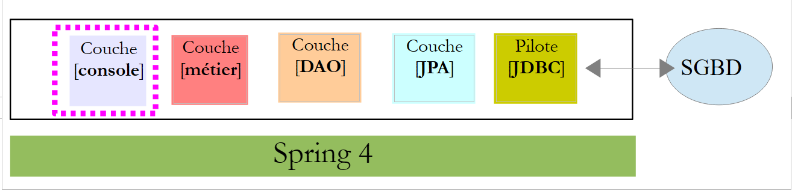 |
O programa de console é básico. Ele ilustra como recuperar uma chave externa:
package rdvmedecins.boot;
import java.text.SimpleDateFormat;
import java.util.Date;
import org.springframework.boot.SpringApplication;
import org.springframework.context.ConfigurableApplicationContext;
import rdvmedecins.config.DomainAndPersistenceConfig;
import rdvmedecins.entities.Client;
import rdvmedecins.entities.Creneau;
import rdvmedecins.entities.Rv;
import rdvmedecins.metier.IMetier;
public class Boot {
// inicialização
public static void main(String[] args) {
// preparando a configuração
SpringApplication app = new SpringApplication(DomainAndPersistenceConfig.class);
app.setLogStartupInfo(false);
// iniciando
ConfigurableApplicationContext context = app.run(args);
// função
IMetier métier = context.getBean(IMetier.class);
try {
// adicionar um RV
Date jour = new Date();
System.out.println(String.format("Ajout d'un Rv le [%s] dans le créneau 1 pour le client 1", new SimpleDateFormat("dd/MM/yyyy").format(jour)));
Client client = (Client) new Client().build(1L, 1L);
Creneau créneau = (Creneau) new Creneau().build(1L, 1L);
Rv rv = métier.ajouterRv(jour, créneau, client);
System.out.println(String.format("Rv ajouté = %s", rv));
// verificação
créneau = métier.getCreneauById(1L);
long idMedecin = créneau.getIdMedecin();
display("Liste des rendez-vous", métier.getRvMedecinJour(idMedecin, jour));
} catch (Exception ex) {
System.out.println("Exception : " + ex.getCause());
}
// fechamento do contexto Spring
context.close();
}
// método utilitário — exibe os elementos de uma coleção
private static <T> void display(String message, Iterable<T> elements) {
System.out.println(message);
for (T element : elements) {
System.out.println(element);
}
}
}
O programa adiciona um compromisso e, em seguida, verifica se ele foi adicionado.
- linha 19: a classe [SpringApplication] utilizará a classe de configuração [DomainAndPersistenceConfig];
- linha 20: supressão dos logs de inicialização do aplicativo;
- linha 22: a classe [SpringApplication] é executada. Ela retorna um contexto Spring, ou seja, a lista de beans registrados;
- linha 24: obtém-se uma referência ao bean que implementa a interface [IMetier]. Trata-se, portanto, de uma referência à camada [métier];
- linhas 27-31: adição de um novo agendamento para hoje, para o cliente nº 1 no horário nº 1. O cliente e o horário foram criados do zero para mostrar que apenas os identificadores são utilizados. Inicializamos aqui a versão, mas poderíamos ter colocado qualquer valor. Ela não é utilizada neste contexto;
- linha 34: queremos saber qual é o médico responsável pelo horário nº 1. Para isso, precisamos consultar o banco de dados para buscar o horário nº 1. Como estamos no modo [FetchType.LAZY], o médico não é retornado junto com o horário. No entanto, tomamos o cuidado de incluir um campo [idMedecin] na entidade [Creneau] para recuperar a chave primária do médico;
- linha 35: recuperamos o código primário do médico;
- linha 36: exibe-se a lista de consultas do médico;
Os resultados na console são os seguintes:
2.11. Introdução ao Spring MVC
 |
Passamos agora à construção da camada web. Ela é composta principalmente por métodos que processam URL específicos e respondem com uma linha de texto no formato JSON (Javascript Object Notation). Essa camada web é uma interface web que às vezes é chamada de API web. Vamos implementar essa interface com o Spring MVC, outro ramo do ecossistema Spring. Começamos estudando um dos guias encontrados no [http://spring.io].
2.11.1. O projeto de demonstração
 |
- no [1], importamos um dos guias do Spring;
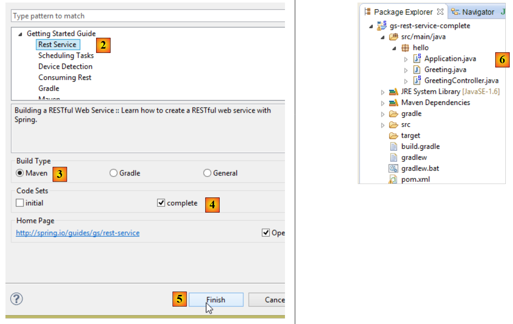 |
- em [2], selecionamos o exemplo [Rest Service];
- em [3], selecionamos o projeto Maven;
- em [4], selecionamos a versão final do guia;
- em [5], confirmamos;
- em [6], o projeto importado;
Os serviços web acessíveis por meio de URL padrão e que fornecem texto JSON são frequentemente chamados de serviços REST (REpresentational State Transfer). Neste documento, vou me limitar a chamar o serviço que vamos construir de serviço web / JSON. Um serviço é considerado Restful se respeitar certas regras. Não procurei respeitá-las.
Vamos agora examinar o projeto importado, começando pela sua configuração do Maven.
2.11.2. Configuração do Maven
O arquivo [pom.xml] é o seguinte:
<?xml version="1.0" encoding="UTF-8"?>
<project xmlns="http://maven.apache.org/POM/4.0.0" xmlns:xsi="http://www.w3.org/2001/XMLSchema-instance"
xsi:schemaLocation="http://maven.apache.org/POM/4.0.0 http://maven.apache.org/xsd/maven-4.0.0.xsd">
<modelVersion>4.0.0</modelVersion>
<groupId>org.springframework</groupId>
<artifactId>gs-rest-service</artifactId>
<version>0.1.0</version>
<parent>
<groupId>org.springframework.boot</groupId>
<artifactId>spring-boot-starter-parent</artifactId>
<version>1.1.0.RELEASE</version>
</parent>
<dependencies>
<dependency>
<groupId>org.springframework.boot</groupId>
<artifactId>spring-boot-starter-web</artifactId>
</dependency>
<dependency>
<groupId>com.fasterxml.jackson.core</groupId>
<artifactId>jackson-databind</artifactId>
</dependency>
</dependencies>
<properties>
<start-class>hello.Application</start-class>
</properties>
<build>
<plugins>
<plugin>
<artifactId>maven-compiler-plugin</artifactId>
</plugin>
<plugin>
<groupId>org.springframework.boot</groupId>
<artifactId>spring-boot-maven-plugin</artifactId>
</plugin>
</plugins>
</build>
<repositories>
<repository>
<id>spring-releases</id>
<url>http://repo.spring.io/release</url>
</repository>
</repositories>
<pluginRepositories>
<pluginRepository>
<id>spring-releases</id>
<url>http://repo.spring.io/release</url>
</pluginRepository>
</pluginRepositories>
</project>
- linhas 10-14: assim como no projeto [Spring Data], encontramos o projeto pai [Spring Boot];
- linhas 17-20: o artefato [spring-boot-starter-web] traz consigo as bibliotecas necessárias para um projeto Spring MVC. Ele traz, em particular, um servidor Tomcat embutido. É nesse servidor que o aplicativo será executado;
- linhas 21-24: a biblioteca Jackson gerencia o JSON: transformação de um objeto Java em string JSON e vice-versa;
As bibliotecas incluídas nessa configuração são muito numerosas:
 |  |
Acima, vemos os três arquivos do servidor Tomcat.
2.11.3. A arquitetura de um serviço Spring REST
O Spring MVC implementa o modelo de arquitetura conhecido como MVC (Modelo – Visão – Controlador) da seguinte maneira:
 |
O processamento de uma solicitação de um cliente ocorre da seguinte maneira:
- solicitação — as URL solicitadas têm o formato http://machine:port/contexte/Action/param1/param2/....?p1=v1&p2=v2&... A [Dispatcher Servlet] é a classe do Spring que processa as URL recebidas. Ela “encaminha” o URL para a ação que deve processá-lo. Essas ações são métodos de classes específicas chamadas [Contrôleurs]. O C de MVC é, neste caso, a cadeia [Dispatcher Servlet, Contrôleur, Action]. Se nenhuma ação tiver sido configurada para processar o URL recebido, o servlet [Dispatcher Servlet] responderá que o URL solicitado não foi encontrado (erro 404 NOT FOUND);
- processamento
- a ação selecionada pode utilizar os parâmetros parami que o servlet [Dispatcher Servlet] lhe transmitiu. Esses parâmetros podem provir de várias fontes:
- do caminho [/param1/param2/...] do URL,
- dos parâmetros [p1=v1&p2=v2] do URL,
- de parâmetros enviados pelo navegador junto com sua solicitação;
- no processamento da solicitação do usuário, a ação pode precisar da camada [metier] [2b]. Uma vez processada a solicitação do cliente, ela pode gerar diversas respostas. Um exemplo clássico é:
- uma página de erro, caso a solicitação não tenha sido processada corretamente
- uma página de confirmação, caso contrário
- a ação solicita que uma determinada vista seja exibida [3]. Essa vista exibirá dados que chamamos de modelo da vista. Esse é o M de MVC. A ação criará esse modelo M [2c] e solicitará que uma vista V seja exibida [3];
- resposta — a vista V selecionada utiliza o modelo M criado pela ação para inicializar as partes dinâmicas da resposta HTML que ela deve enviar ao cliente e, em seguida, envia essa resposta.
Para um serviço web / JSON, a arquitetura anterior é ligeiramente modificada:
 |
- em [4a], o modelo, que é uma classe Java, é transformado em uma string JSON por uma biblioteca JSON;
- em [4b], essa string JSON é enviada ao navegador;
2.11.4. O controlador C
 |
O aplicativo importado possui o seguinte controlador:
package hello;
import java.util.concurrent.atomic.AtomicLong;
import org.springframework.stereotype.Controller;
import org.springframework.web.bind.annotation.RequestMapping;
import org.springframework.web.bind.annotation.RequestParam;
import org.springframework.web.bind.annotation.ResponseBody;
@Controller
public class GreetingController {
private static final String template = "Hello, %s!";
private final AtomicLong counter = new AtomicLong();
@RequestMapping("/greeting")
public @ResponseBody
Greeting greeting(@RequestParam(value = "name", required = false, defaultValue = "World") String name) {
return new Greeting(counter.incrementAndGet(), String.format(template, name));
}
}
- linha 9: a anotação [@Controller] transforma a classe [GreetingController] em um controlador Spring, ou seja, seus métodos são registrados para processar URL;
- linha 15: a anotação [@RequestMapping] indica o URL que o método processa, neste caso o URL [/greeting]. Veremos mais adiante que esse URL pode ser configurado e que é possível recuperar esses parâmetros;
- linha 16: a anotação [@ResponseBody] indica que o método não gera um modelo para uma visualização (JSP, JSF, Thymeleaf, ...) que será posteriormente enviada ao navegador do cliente, mas produz ela própria a resposta enviada ao navegador. Aqui, ela produz um objeto do tipo [Greeting] (linha 18). Embora não fique evidente aqui, esse objeto será primeiro transformado em JSON antes de ser enviado ao navegador. É a presença de uma biblioteca JSON nas dependências do projeto que faz com que o Spring Boot, por meio de autoconfiguração, configure o projeto dessa maneira;
- linha 17: o método [greeting] possui um parâmetro [String name]. A anotação [@RequestParam(value = "name", required = false, defaultValue = "World"] indica que esse parâmetro deve ser inicializado com um parâmetro chamado [name](@RequestParam(value = "name"). Este pode ser o parâmetro de um GET ou de um POST. Esse parâmetro não é obrigatório (required = false). Nesse último caso, o parâmetro [name] do método será inicializado com o valor [World] (defaultValue = "World").
2.11.5. O modelo M
O modelo M gerado pelo método anterior é o seguinte objeto [Greeting]:
 |
package hello;
public class Greeting {
private final long id;
private final String content;
public Greeting(long id, String content) {
this.id = id;
this.content = content;
}
public long getId() {
return id;
}
public String getContent() {
return content;
}
}
A transformação JSON desse objeto criará a sequência de caracteres {"id":n,"content":"texto"}. Por fim, a sequência JSON gerada pelo método do controlador terá o seguinte formato:
ou
2.11.6. Configuração do projeto
 |
O projeto é configurado pela seguinte classe [Application]:
package hello;
import org.springframework.boot.autoconfigure.EnableAutoConfiguration;
import org.springframework.boot.SpringApplication;
import org.springframework.context.annotation.ComponentScan;
@ComponentScan
@EnableAutoConfiguration
public class Application {
public static void main(String[] args) {
SpringApplication.run(Application.class, args);
}
}
- linha 11: curiosamente, essa classe é executável com um método [main] específico para aplicativos de console. É exatamente o que ocorre. A classe [SpringApplication] da linha 12 iniciará o servidor Tomcat presente nas dependências e implantará o serviço REST nele;
- linha 4: vemos que a classe [SpringApplication] pertence ao projeto [Spring Boot];
- linha 12: o primeiro parâmetro é a classe que configura o projeto; o segundo, eventuais parâmetros;
- linha 8: a anotação [@EnableAutoConfiguration] solicita que o Spring Boot realize a configuração do projeto;
- linha 7: a anotação [@ComponentScan] faz com que a pasta que contém a classe [Application] seja explorada para localizar os componentes do Spring. Será encontrado um, a classe [GreetingController], que possui a anotação [@Controller], o que a torna um componente Spring;
2.11.7. Execução do projeto
Vamos executar o projeto:
 |
Obtemos os seguintes logs de console:
____ _ __ _ _
- linha 12: o servidor Tomcat é iniciado na porta 8080 (linha 11);
- linha 16: o servlet [DispatcherServlet] está presente;
- linha 19: o método [GreetingController.greeting] foi detectado;
Para testar a aplicação web, solicitamos o URL [http://localhost:8080/greeting]:
 |  |
Recebemos corretamente a sequência esperada JSON. Pode ser interessante verificar os cabeçalhos HTTP enviados pelo servidor. Para isso, vamos utilizar o plugin do Chrome chamado [Advanced Rest Client] (ver Anexos):
 |
- em [1], o URL solicitado;
- em [2], é utilizado o método GET;
- em [3], a resposta JSON;
- em [4], o servidor indicou que estava enviando uma resposta no formato JSON;
- em [5], solicita-se o mesmo URL, mas desta vez com um POST;
- em [7], as informações são enviadas ao servidor no formato [urlencoded];
- em [6], o parâmetro name com seu valor;
- em [8], o navegador informa ao servidor que está enviando as informações [urlencoded];
- em [9], a resposta JSON do servidor;
2.11.8. Criação de um arquivo executável
É possível criar um arquivo executável fora do Eclipse. A configuração necessária está no arquivo [pom.xml]:
<properties>
<project.build.sourceEncoding>UTF-8</project.build.sourceEncoding>
<start-class>istia.st.Application</start-class>
<java.version>1.7</java.version>
</properties>
<build>
<plugins>
<plugin>
<groupId>org.springframework.boot</groupId>
<artifactId>spring-boot-maven-plugin</artifactId>
</plugin>
</plugins>
</build>
- as linhas 9 a 12 definem o plugin que criará o arquivo executável;
- a linha 3 define a classe executável do projeto;
Proceda da seguinte forma:
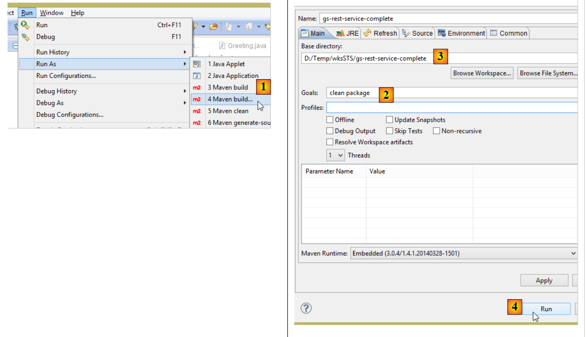 |
- no [1]: executa-se um objetivo do Maven;
- em [2]: há dois objetivos (goals): [clean] para excluir a pasta [target] do projeto Maven e [package] para regenerá-la;
- em [3]: a pasta [target] gerada será criada nessa pasta;
- no [4]: gera-se o arquivo de destino;
Nos logs que aparecem no console, é importante verificar se o plugin [spring-boot-maven-plugin] está presente. É ele que gera o arquivo executável.
Usando um terminal, acesse a pasta gerada:
- linha 5: o arquivo gerado;
Esse arquivo é executado da seguinte maneira:
Agora que o aplicativo web foi iniciado, é possível acessá-lo com um navegador:
 |
2.11.9. Implantar a aplicação em um servidor Tomcat
Embora o Spring Boot seja muito prático no modo de desenvolvimento, é provável que uma aplicação em produção seja implantada em um servidor Tomcat real. Veja como proceder:
Altere o arquivo [pom.xml] da seguinte maneira:
<?xml version="1.0" encoding="UTF-8"?>
<project xmlns="http://maven.apache.org/POM/4.0.0" xmlns:xsi="http://www.w3.org/2001/XMLSchema-instance"
xsi:schemaLocation="http://maven.apache.org/POM/4.0.0 http://maven.apache.org/xsd/maven-4.0.0.xsd">
<modelVersion>4.0.0</modelVersion>
<groupId>org.springframework</groupId>
<artifactId>gs-rest-service</artifactId>
<version>0.1.0</version>
<packaging>war</packaging>
<parent>
<groupId>org.springframework.boot</groupId>
<artifactId>spring-boot-starter-parent</artifactId>
<version>1.1.0.RELEASE</version>
</parent>
<dependencies>
<dependency>
<groupId>org.springframework.boot</groupId>
<artifactId>spring-boot-starter-web</artifactId>
</dependency>
<dependency>
<groupId>com.fasterxml.jackson.core</groupId>
<artifactId>jackson-databind</artifactId>
</dependency>
<dependency>
<groupId>org.springframework.boot</groupId>
<artifactId>spring-boot-starter-tomcat</artifactId>
<scope>provided</scope>
</dependency>
</dependencies>
<properties>
<start-class>hello.Application</start-class>
</properties>
....
</project>
As alterações devem ser feitas em dois locais:
- linha 9: é preciso indicar que será gerado um arquivo WAR (Web ARchive);
- linhas 26-30: é preciso adicionar uma dependência do artefato [spring-boot-starter-tomcat]. Esse artefato inclui todas as classes do Tomcat nas dependências do projeto;
- linha 29: esse artefato é o [provided], ou seja, os arquivos correspondentes não serão incluídos no WAR gerado. Na verdade, esses arquivos estarão no servidor Tomcat no qual a aplicação será executada;
Além disso, é necessário configurar a aplicação web. Na ausência do arquivo [web.xml], isso é feito com uma classe que herda de [SpringBootServletInitializer]:
 |
A classe [ApplicationInitializer] é a seguinte:
package hello;
import org.springframework.boot.builder.SpringApplicationBuilder;
import org.springframework.boot.context.web.SpringBootServletInitializer;
public class ApplicationInitializer extends SpringBootServletInitializer {
@Override
protected SpringApplicationBuilder configure(SpringApplicationBuilder application) {
return application.sources(Application.class);
}
}
- linha 6: a classe [ApplicationInitializer] estende a classe [SpringBootServletInitializer];
- linha 9: o método [configure] é redefinido (linha 8);
- linha 10: é fornecida a classe que configura o projeto;
Para executar o projeto, pode-se proceder da seguinte forma:
 |
- no [1], executa-se o projeto em um dos servidores registrados no IDE Eclipse;
- no [2], seleciona-se o [tc Server Developer], que está presente por padrão. Trata-se de uma variante do Tomcat;
Feito isso, é possível acessar o URL [http://localhost:8080/gs-rest-service/greeting/?name=Mitchell] em um navegador:
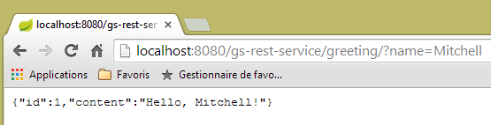 |
Agora sabemos como gerar um arquivo WAR. A seguir, continuaremos trabalhando com o Spring Boot e seu arquivo JAR executável.
2.11.10. Criar um novo projeto web
Para criar um novo projeto web, pode-se proceder da seguinte maneira:
 |
- em [1]: Arquivo / Novo / Projeto Spring Starter
- em [2]: selecionar [Web]. Não selecionamos bibliotecas de visualizações, pois em um serviço web / JSON não há visualizações;
- o projeto criado será um projeto Maven. Em [3], insira o grupo do artefato Maven que será criado; em [4], o nome do artefato;
- em [5], insere-se o nome de um pacote onde o Spring colocará a classe de configuração do projeto;
- em [6], atribui-se um nome ao projeto Eclipse – que pode ser diferente de [4];
 |
2.12. A camada [web]
 |
 |
Vamos construir a camada web em várias etapas:
- etapa 1: uma camada web operacional sem autenticação;
- etapa 2: implementação da autenticação com o Spring Security;
- etapa 3: implementação do CORS e do [Cross-origin resource sharing (CORS) is a mechanism that allows many resources (e.g. fonts, JavaScript, etc.) on a web page to be requested from another domain outside the domain the resource originated from. (Wikipedia)]. O cliente do nosso serviço web será um cliente web Angular que não pertencerá necessariamente ao mesmo domínio que o nosso serviço web. Por padrão, ele não poderá acessá-lo, a menos que o serviço web o autorize. Veremos como;
2.12.1. Configuração do Maven
O arquivo [pom.xml] do projeto é o seguinte:
<modelVersion>4.0.0</modelVersion>
<groupId>istia.st.spring4.mvc</groupId>
<artifactId>rdvmedecins-webapi-v1</artifactId>
<version>0.0.1-SNAPSHOT</version>
<name>rdvmedecins-webapi-v1</name>
<description>Gestion de RV Médecins</description>
<parent>
<groupId>org.springframework.boot</groupId>
<artifactId>spring-boot-starter-parent</artifactId>
<version>1.0.0.RELEASE</version>
</parent>
<dependencies>
<dependency>
<groupId>org.springframework.boot</groupId>
<artifactId>spring-boot-starter-web</artifactId>
</dependency>
<dependency>
<groupId>istia.st.spring4.rdvmedecins</groupId>
<artifactId>rdvmedecins-metier-dao</artifactId>
<version>0.0.1-SNAPSHOT</version>
</dependency>
</dependencies>
- linhas 7-11: o projeto pai do Maven;
- linhas 13-16: as dependências para um projeto Spring MVC;
- linhas 17-21: as dependências do projeto das camadas [métier, DAO, JPA];
2.12.2. A interface do serviço web
 |
- em [1], acima, o navegador só pode solicitar um número restrito de URL com uma sintaxe específica;
- em [4], ele recebe uma resposta JSON;
Todas as respostas do nosso serviço web terão o mesmo formato, correspondente à transformação JSON de um objeto do tipo [Reponse], conforme segue:
package rdvmedecins.web.models;
public class Reponse {
// ----------------- propriedades
// status da operação
private int status;
// a resposta JSON
private Object data;
// ---------------fabricantes
public Reponse() {
}
public Reponse(int status, Object data) {
this.status = status;
this.data = data;
}
// métodos
public void incrStatusBy(int increment) {
status += increment;
}
// ----------------------getters e setters
...
}
- linha 7: código de erro da resposta 0: OK; em caso contrário: KO;
- linha 9: o corpo da resposta;
Apresentamos agora as capturas de tela que ilustram a interface do serviço web / JSON:
Lista de todos os pacientes do consultório médico [/getAllClients]
 |
Lista de todos os médicos do consultório médico [/getAllMedecins]
 |
Lista dos horários disponíveis de um médico [/getAllCreneaux/{idMedecin}]
 |
Lista de consultas de um médico [/getRvMedecinJour/{idMedecin}/{aaaa-mm-jj}
 |
Agenda de um médico [/getAgendaMedecinJour/{idMedecin}/{aaaa-mm-jj}]
 |
Para adicionar/excluir um compromisso, usamos a extensão do Chrome [Advanced Rest Client], pois essas operações são realizadas com um POST.
Adicionar uma consulta [/ajouterRv]
 |
- no [0], o URL do serviço web;
- em [1], utiliza-se o método POST;
- em [2], o texto JSON das informações transmitidas ao serviço web na forma {dia, idClient, idCreneau};
- em [3], o cliente informa ao serviço web que está enviando informações no formato JSON;
A resposta é, então, a seguinte:
 |
- em [4]: o cliente envia o cabeçalho indicando que os dados que está enviando estão no formato JSON;
- em [5]: o serviço web responde que também está enviando JSON;
- em [6]: a resposta JSON do serviço web. O campo [data] contém o formato JSON do compromisso adicionado;
É possível verificar a existência do novo compromisso:
 |
Excluir um compromisso [/supprimerRv]
 |
- em [1], o URL do serviço web;
- em [2], é utilizado o método POST;
- em [3], o texto JSON das informações transmitidas ao serviço web na forma {idRv};
- em [4], o cliente informa ao serviço web que está enviando informações JSON;
A resposta é, então, a seguinte:
 |
- em [5]: o campo [status] está em 0, indicando que a operação foi bem-sucedida;
É possível verificar a exclusão do compromisso:
 |
Acima, a consulta do paciente [Mme GERMAN] não está mais presente.
O serviço web também permite recuperar entidades por meio de seus identificadores:
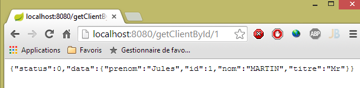 |
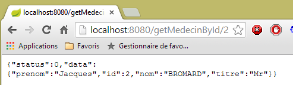 |
 |
 |
Todas essas entidades URL são processadas pelo controlador [RdvMedecinsController], que apresentaremos a seguir.
2.12.3. A estrutura do controlador [RdvMedecinsController]
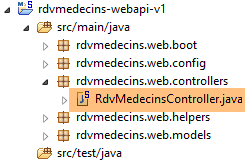 |
O controlador [RdvMedecinsController] é o seguinte:
package rdvmedecins.web.controllers;
import java.text.ParseException;
...
@RestController
public class RdvMedecinsController {
@Autowired
private ApplicationModel application;
private List<String> messages;
@PostConstruct
public void init() {
// mensagens de erro do aplicativo
messages = application.getMessages();
}
// lista de médicos
@RequestMapping(value = "/getAllMedecins", method = RequestMethod.GET)
public Reponse getAllMedecins() {
...
}
// lista de clientes
@RequestMapping(value = "/getAllClients", method = RequestMethod.GET)
public Reponse getAllClients() {
...
}
// lista de horários disponíveis de um médico
@RequestMapping(value = "/getAllCreneaux/{idMedecin}", method = RequestMethod.GET)
public Reponse getAllCreneaux(@PathVariable("idMedecin") long idMedecin) {
...
}
// lista de consultas de um médico
@RequestMapping(value = "/getRvMedecinJour/{idMedecin}/{jour}", method = RequestMethod.GET)
public Reponse getRvMedecinJour(@PathVariable("idMedecin") long idMedecin,
@PathVariable("jour") String jour) {
...
}
@RequestMapping(value = "/getClientById/{id}", method = RequestMethod.GET)
public Reponse getClientById(@PathVariable("id") long id) {
...
}
@RequestMapping(value = "/getMedecinById/{id}", method = RequestMethod.GET)
public Reponse getMedecinById(@PathVariable("id") long id) {
...
}
@RequestMapping(value = "/getRvById/{id}", method = RequestMethod.GET)
public Reponse getRvById(@PathVariable("id") long id) {
...
}
@RequestMapping(value = "/getCreneauById/{id}", method = RequestMethod.GET)
public Reponse getCreneauById(@PathVariable("id") long id) {
...
}
@RequestMapping(value = "/ajouterRv", method = RequestMethod.POST, consumes = "application/json; charset=UTF-8")
public Reponse ajouterRv(@RequestBody PostAjouterRv post) {
...
}
@RequestMapping(value = "/supprimerRv", method = RequestMethod.POST, consumes = "application/json; charset=UTF-8")
public Reponse supprimerRv(@RequestBody PostSupprimerRv post) {
...
}
@RequestMapping(value = "/getAgendaMedecinJour/{idMedecin}/{jour}", method = RequestMethod.GET)
public Reponse getAgendaMedecinJour(
@PathVariable("idMedecin") long idMedecin,
@PathVariable("jour") String jour) {
...
}
}
- linha 6: a anotação [@RestController] transforma a classe [RdvMedecinsController] em um controlador Spring. Além disso, isso também faz com que os métodos que processam os URL gerem uma resposta que será automaticamente transformada em JSON;
- linhas 9-10: um objeto do tipo [ApplicationModel] será injetado aqui pelo Spring;
- linha 13: a anotação [@PostConstruct] marca um método a ser executado logo após a instanciação da classe. Quando este é executado, os objetos injetados pelo Spring já estão disponíveis;
- todos os métodos retornam um objeto do tipo [Reponse], conforme segue:
package rdvmedecins.web.models;
public class Reponse {
// ----------------- propriedades
// status da operação
private int status;
// a resposta
private Object data;
...
}
Esse objeto é serializado em JSON antes de ser enviado ao navegador do cliente;
- linha 20: a anotação [@RequestMapping] define as condições de chamada do método. Aqui, o método processa uma solicitação GET proveniente do URL [/getAllMedecins]. Se essa URL fosse solicitada por um POST, ela seria recusada e o Spring MVC enviaria um código de erro HTTP ao cliente web;
- linha 32: o URL é configurado por {idMedecin}. Esse parâmetro é recuperado com a anotação [@PathVariable] na linha 33;
- linha 33: o único parâmetro [long idMedecin] recebe seu valor do parâmetro {idMedecin} do URL [@PathVariable("idMedecin")]. O parâmetro no URL e o do método podem ter nomes diferentes. É importante observar aqui que [@PathVariable("idMedecin")] é do tipo String (todo o URL é um String), enquanto o parâmetro [long idMedecin] é do tipo [long]. A conversão de tipo é feita automaticamente. Um código de erro HTTP é retornado se essa conversão de tipo falhar;
- linha 65: a anotação [@RequestBody] designa o corpo da consulta. Em uma solicitação GET, quase nunca há corpo (mas é possível incluir um). Em uma solicitação POST, na maioria das vezes há corpo (mas é possível não incluir nenhum). Para o URL [ajouterRv], o cliente web envia em seu POST a seguinte sequência:
A sintaxe [@RequestBody PostAjouterRv post] (linha 65) , somada ao fato de que o método espera o JSON [consumes = "application/json; charset=UTF-8"] na linha 64, fará com que a string JSON enviada pelo cliente web seja deserializada em um objeto do tipo [PostAjouter]. Este é o seguinte:
package rdvmedecins.web.models;
public class PostAjouterRv {
// dados da postagem
private String jour;
private long idClient;
private long idCreneau;
// getters e setters
...
}
Nesse caso também, as alterações de tipo necessárias ocorrerão automaticamente;
- nas linhas 69-70, encontramos um mecanismo semelhante para o URL e o [/supprimerRv]. A string JSON enviada é a seguinte:
e o tipo [PostSupprimerRv] é o seguinte:
package rdvmedecins.web.models;
public class PostSupprimerRv {
// dados da postagem
private long idRv;
// getters e setters
...
}
2.12.4. Os modelos do serviço web
 |
Já apresentamos os modelos [Reponse, PostAjouterRv, PostSupprimerRv]. O modelo [ApplicationModel] é o seguinte:
package rdvmedecins.web.models;
import java.util.Date;
...
@Component
public class ApplicationModel implements IMetier {
// a camada [métier]
@Autowired
private IMetier métier;
// dados provenientes da camada [métier]
private List<Medecin> médecins;
private List<Client> clients;
// mensagens de erro
private List<String> messages;
@PostConstruct
public void init() {
// recuperam-se os médicos e os clientes
try {
médecins = métier.getAllMedecins();
clients = métier.getAllClients();
} catch (Exception ex) {
messages = Static.getErreursForException(ex);
}
}
// getter
public List<String> getMessages() {
return messages;
}
// ------------------------- interface da camada [métier]
@Override
public List<Client> getAllClients() {
return clients;
}
@Override
public List<Medecin> getAllMedecins() {
return médecins;
}
@Override
public List<Creneau> getAllCreneaux(long idMedecin) {
return métier.getAllCreneaux(idMedecin);
}
@Override
public List<Rv> getRvMedecinJour(long idMedecin, Date jour) {
return métier.getRvMedecinJour(idMedecin, jour);
}
@Override
public Client getClientById(long id) {
return métier.getClientById(id);
}
@Override
public Medecin getMedecinById(long id) {
return métier.getMedecinById(id);
}
@Override
public Rv getRvById(long id) {
return métier.getRvById(id);
}
@Override
public Creneau getCreneauById(long id) {
return métier.getCreneauById(id);
}
@Override
public Rv ajouterRv(Date jour, Creneau creneau, Client client) {
return métier.ajouterRv(jour, creneau, client);
}
@Override
public void supprimerRv(Rv rv) {
métier.supprimerRv(rv);
}
@Override
public AgendaMedecinJour getAgendaMedecinJour(long idMedecin, Date jour) {
return métier.getAgendaMedecinJour(idMedecin, jour);
}
}
- linha 6: a anotação [@Component] transforma a classe [ApplicationModel] em um componente Spring. Assim como todos os componentes Spring vistos até agora (com exceção de @Controller), apenas um objeto desse tipo será instanciado (singleton);
- linha 7: a classe [ApplicationModel] implementa a interface [IMetier];
- linhas 10-11: uma referência na camada [métier] é injetada pelo Spring;
- linha 19: a anotação [@PostConstruct] faz com que o método [init] seja executado logo após a instanciação da classe [ApplicationModel];
- linhas 23-24: recuperam-se as listas de médicos e clientes da camada [métier];
- linha 26: se ocorrer uma exceção, as mensagens da pilha de exceções são armazenadas no campo da linha 17;
A classe [ApplicationModel] servirá para duas coisas:
- como cache para armazenar as listas de médicos e pacientes (clientes);
- como interface única para os controladores;
A arquitetura da camada web evolui da seguinte forma:
 |
- na classe [2b], os métodos do(s) controlador(es) se comunicam com o singleton [ApplicationModel];
Essa estratégia proporciona flexibilidade no gerenciamento do cache. Atualmente, os horários dos médicos não são armazenados em cache. Para armazená-los, basta modificar a classe [ApplicationModel]. Isso não tem nenhum impacto sobre o controlador, que continuará a utilizar o método [List<Creneau> getAllCreneaux(long idMedecin)] como fazia anteriormente. É a implementação desse método na classe [ApplicationModel] que será alterada.
2.12.5. A classe Static
A classe [Static] reúne um conjunto de métodos estáticos utilitários que não têm caráter “de negócio” ou “web”:
 |
Seu código é o seguinte:
package rdvmedecins.web.helpers;
import java.text.SimpleDateFormat;
...
public class Static {
public Static() {
}
// lista de mensagens de erro de uma exceção
public static List<String> getErreursForException(Exception exception) {
// recupera-se a lista de mensagens de erro da exceção
Throwable cause = exception;
List<String> erreurs = new ArrayList<String>();
while (cause != null) {
erreurs.add(cause.getMessage());
cause = cause.getCause();
}
return erreurs;
}
// mapeadores Object --> Map
// --------------------------------------------------------
....
}
- linha 12: o método [Static.getErreursForException], que foi utilizado (linha 8 abaixo) no método [init] da classe [ApplicationModel]:
@PostConstruct
public void init() {
// recupera-se os médicos e os clientes
try {
médecins = métier.getAllMedecins();
clients = métier.getAllClients();
} catch (Exception ex) {
messages = Static.getErreursForException(ex);
}
}
O método cria um objeto [List<String>] com as mensagens de erro [exception.getMessage()] de uma exceção [exception] e das mensagens que ela contém, [exception.getCause()].
A classe [Static] contém outros métodos utilitários, aos quais voltaremos quando os encontrarmos.
Vamos agora detalhar o processamento do URL do serviço web. Três classes principais estão envolvidas nesse processamento:
- o controlador [RdvMedecinsController];
- a classe de métodos utilitários [Static];
- a classe de cache [ApplicationModel];
 |
2.12.6. O método [init] do controlador
O controlador [RdvMedecinsController] (ver parágrafo 2.12.3) possui um método [init] que é executado logo após sua instanciação:
@Autowired
private ApplicationModel application;
private List<String> messages;
@PostConstruct
public void init() {
// mensagens de erro do aplicativo
messages = application.getMessages();
}
- linha 8: as mensagens de erro armazenadas no cache da aplicação [ApplicationModel] são armazenadas localmente no campo da linha 3. Isso permitirá que os métodos saibam se a aplicação foi inicializada corretamente.
2.12.7. O URL [/getAllMedecins]
O URL [/getAllMedecins] é processado pelo seguinte método do controlador [RdvMedecinsController]:
// lista de médicos
@RequestMapping(value = "/getAllMedecins", method = RequestMethod.GET)
public Reponse getAllMedecins() {
// estado do aplicativo
if (messages != null) {
return new Reponse(-1, messages);
}
// lista de médicos
try {
return new Reponse(0, application.getAllMedecins());
} catch (Exception e) {
return new Reponse(1, Static.getErreursForException(e));
}
}
- linha 5: verifica-se se o aplicativo foi inicializado corretamente (messages == null). Caso contrário, retorna-se uma resposta com status=-1 e data=messages;
- linha 10: caso contrário, retorna-se a lista de médicos com um status igual a 0. O método [application.getAllMedecins()] não lança uma exceção, pois se limita a retornar uma lista que está no cache. No entanto, manteremos esse tratamento de exceção para o caso de os médicos não estarem mais no cache;
Ainda não ilustramos o caso em que a aplicação não foi inicializada corretamente. Vamos interromper o SGBD e o MySQL5, iniciar o serviço web e, em seguida, solicitar o URL e o [/getAllMedecins]:

De fato, ocorre um erro. Em condições normais, obtemos a seguinte visualização:
|
2.12.8. O URL [/getAllClients]
O URL [/getAllClients] é processado pelo seguinte método do controlador [RdvMedecinsController]:
// lista de clientes
@RequestMapping(value = "/getAllClients")
public Reponse getAllClients() {
// status do aplicativo
if (messages != null) {
return new Reponse(-1, messages);
}
// lista de clientes
try {
return new Reponse(0, application.getAllClients());
} catch (Exception e) {
return new Reponse(1, Static.getErreursForException(e));
}
}
Ela é análoga ao método [getAllMedecins] já estudado. Os resultados obtidos são os seguintes:
|
2.12.9. O URL [/getAllCreneaux/{idMedecin}]
O URL [/getAllCreneaux/{idMedecin}] é processado pelo seguinte método do controlador [RdvMedecinsController]:
// lista de horários de um médico
@RequestMapping(value = "/getAllCreneaux/{idMedecin}", method = RequestMethod.GET)
public Reponse getAllCreneaux(@PathVariable("idMedecin") long idMedecin) {
// status do aplicativo
if (messages != null) {
return new Reponse(-1, messages);
}
// busca do médico
Reponse réponse = getMedecin(idMedecin);
if (réponse.getStatus() != 0) {
return réponse;
}
Medecin médecin = (Medecin) réponse.getData();
// horários do médico
List<Creneau> créneaux = null;
try {
créneaux = application.getAllCreneaux(médecin.getId());
} catch (Exception e1) {
return new Reponse(3, Static.getErreursForException(e1));
}
// retornando a resposta
return new Reponse(0, Static.getListMapForCreneaux(créneaux));
}
- linha 9: o médico identificado pelo parâmetro [id] é consultado por um método local:
private Reponse getMedecin(long id) {
// recuperação do médico
Medecin médecin = null;
try {
médecin = application.getMedecinById(id);
} catch (Exception e1) {
return new Reponse(1, Static.getErreursForException(e1));
}
// médico já registrado?
if (médecin == null) {
return new Reponse(2, null);
}
// ok
return new Reponse(0, médecin);
}
Retorna-se desse método com um status em [0,1,2]. Voltemos ao código do método [getAllCreneaux]:
- linhas 10-12: se for status!=0, retorna-se imediatamente a resposta;
- linha 13: busca-se o médico;
- linha 17: recuperam-se os horários disponíveis desse médico;
- linha 22: enviamos como resposta um objeto [Static.getListMapForCreneaux(créneaux)];
Lembrando a definição da classe [Creneau]:
@Entity
@Table(name = "creneaux")
public class Creneau extends AbstractEntity {
private static final long serialVersionUID = 1L;
// características de um horário de RV
private int hdebut;
private int mdebut;
private int hfin;
private int mfin;
// um horário está vinculado a um médico
@ManyToOne(fetch = FetchType.LAZY)
@JoinColumn(name = "id_medecin")
private Medecin medecin;
// chave estrangeira
@Column(name = "id_medecin", insertable = false, updatable = false)
private long idMedecin;
...
}
- linha 13: o médico é pesquisado no modo [FetchType.LAZY];
Recordemos a consulta JPQL que implementa o método [getAllCreneaux] na camada [DAO]:
@Query("select c from Creneau c where c.medecin.id=?1")
A notação [c.medecin.id] força a junção entre as tabelas [CRENEAUX] e [MEDECINS]. Assim, a consulta retorna todos os horários do médico, com o nome do médico em cada um deles. Ao serializar esses horários em JSON, a sequência JSON do médico aparece em cada um deles. Isso é desnecessário. Portanto, em vez de serializar um objeto [Creneau], vamos serializar um objeto [Map] no qual incluiremos apenas os campos desejados.
Voltemos ao código analisado inicialmente:
// retornamos a resposta
return new Reponse(0, Static.getListMapForCreneaux(créneaux));
O método [Static.getListMapForCreneaux] é o seguinte:
// List<Creneau> --> List<Map>
public static List<Map<String, Object>> getListMapForCreneaux(List<Creneau> créneaux) {
// lista de dicionários <String, Object>
List<Map<String, Object>> liste = new ArrayList<Map<String, Object>>();
for (Creneau créneau : créneaux) {
liste.add(Static.getMapForCreneau(créneau));
}
// retornamos a lista
return liste;
}
e o método [Static.getMapForCreneau] é o seguinte:
// Creneau --> Map
public static Map<String, Object> getMapForCreneau(Creneau créneau) {
// algo a ser feito?
if (créneau == null) {
return null;
}
// dicionário <String,Object>
Map<String, Object> hash = new HashMap<String, Object>();
hash.put("id", créneau.getId());
hash.put("hDebut", créneau.getHdebut());
hash.put("mDebut", créneau.getMdebut());
hash.put("hFin", créneau.getHfin());
hash.put("mFin", créneau.getMfin());
// retornamos o dicionário
return hash;
}
- linha 8: cria-se um dicionário;
- linhas 9 a 13: inserem-se nele os campos que se deseja manter na cadeia JSON. O campo [medecin] não está presente;
- linha 15: retorna-se esse dicionário;
Os resultados obtidos são os seguintes:
|
ou estes, caso o intervalo não exista:
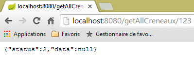 |
ou estes, em caso de erro de acesso ao banco de dados:
 |
2.12.10. O URL [/getRvMedecinJour/{idMedecin}/{jour}]
O URL [/getRvMedecinJour/{idMedecin}/{jour}] é processado pelo seguinte método do controlador [RdvMedecinsController]:
// lista de consultas de um médico
@RequestMapping(value = "/getRvMedecinJour/{idMedecin}/{jour}", method = RequestMethod.GET)
public Reponse getRvMedecinJour(@PathVariable("idMedecin") long idMedecin, @PathVariable("jour") String jour) {
// estado do aplicativo
if (messages != null) {
return new Reponse(-1, messages);
}
// verifica-se a data
Date jourAgenda = null;
SimpleDateFormat sdf = new SimpleDateFormat("yyyy-MM-dd");
sdf.setLenient(false);
try {
jourAgenda = sdf.parse(jour);
} catch (ParseException e) {
return new Reponse(3, null);
}
// recuperamos o médico
Reponse réponse = getMedecin(idMedecin);
if (réponse.getStatus() != 0) {
return réponse;
}
Medecin médecin = (Medecin) réponse.getData();
// lista de suas consultas
List<Rv> rvs = null;
try {
rvs = application.getRvMedecinJour(médecin.getId(), jourAgenda);
} catch (Exception e1) {
return new Reponse(4, Static.getErreursForException(e1));
}
// retornando a resposta
return new Reponse(0, Static.getListMapForRvs(rvs));
}
- linha 31: retorna-se um objeto `List<Map<String,Object>>` em vez de um objeto `List<Rv>`. Vale lembrar a definição da classe `[Rv]`:
@Entity
@Table(name = "rv")
public class Rv extends AbstractEntity {
private static final long serialVersionUID = 1L;
// características de uma consulta
@Temporal(TemporalType.DATE)
private Date jour;
// uma consulta está vinculada a um cliente
@ManyToOne(fetch = FetchType.LAZY)
@JoinColumn(name = "id_client")
private Client client;
// uma consulta está vinculada a um horário
@ManyToOne(fetch = FetchType.LAZY)
@JoinColumn(name = "id_creneau")
private Creneau creneau;
// chaves externas
@Column(name = "id_client", insertable = false, updatable = false)
private long idClient;
@Column(name = "id_creneau", insertable = false, updatable = false)
private long idCreneau;
...
}
- linha 11: o cliente é pesquisado no modo [FetchType.LAZY];
- linha 18: o horário é pesquisado com o modo [FetchType.LAZY];
Lembrando a consulta JPQL, que busca os compromissos:
@Query("select rv from Rv rv left join fetch rv.client c left join fetch rv.creneau cr where cr.medecin.id=?1 and rv.jour=?2")
São realizadas junções explicitamente para recuperar os campos [client] e [creneau]. Além disso, devido à junção [cr.medecin.id=?1], também teremos o médico. O médico aparecerá, portanto, na cadeia JSON de cada consulta. No entanto, essa informação duplicada é, além disso, desnecessária. Voltemos ao código do método:
- linha 31: nós mesmos construímos o dicionário a ser serializado em JSON;
O dicionário construído para uma consulta é o seguinte:
// Rv --> Mapa
public static Map<String, Object> getMapForRv(Rv rv) {
// algo a ser feito?
if (rv == null) {
return null;
}
// dicionário <String,Object>
Map<String, Object> hash = new HashMap<String, Object>();
hash.put("id", rv.getId());
hash.put("client", rv.getClient());
hash.put("creneau", getMapForCreneau(rv.getCreneau()));
// retornamos o dicionário
return hash;
}
- linha 11: retomamos o dicionário do objeto [Creneau] que apresentamos anteriormente;
Os resultados obtidos são os seguintes:
|
ou ainda estes, com um dia incorreto:
 |
ou ainda estes, com um médico incorreto:
 |
2.12.11. O URL [/getAgendaMedecinJour/{idMedecin}/{jour}]
O URL e o [/getAgendaMedecinJour/{idMedecin}/{jour}] são processados pelo seguinte método do controlador [RdvMedecinsController]:
@RequestMapping(value = "/getAgendaMedecinJour/{idMedecin}/{jour}", method = RequestMethod.GET)
public Reponse getAgendaMedecinJour(@PathVariable("idMedecin") long idMedecin, @PathVariable("jour") String jour) {
// estado do aplicativo
if (messages != null) {
return new Reponse(-1, messages);
}
// verifica-se a data
Date jourAgenda = null;
SimpleDateFormat sdf = new SimpleDateFormat("yyyy-MM-dd");
sdf.setLenient(false);
try {
jourAgenda = sdf.parse(jour);
} catch (ParseException e) {
return new Reponse(3, new String[] { String.format("jour [%s] invalide", jour) });
}
// recupera-se o médico
Reponse réponse = getMedecin(idMedecin);
if (réponse.getStatus() != 0) {
return réponse;
}
Medecin médecin = (Medecin) réponse.getData();
// recupera-se a agenda dele
AgendaMedecinJour agenda = null;
try {
agenda = application.getAgendaMedecinJour(médecin.getId(), jourAgenda);
} catch (Exception e1) {
return new Reponse(4, Static.getErreursForException(e1));
}
// ok
return new Reponse(0, Static.getMapForAgendaMedecinJour(agenda));
}
}
- na linha 30, é retornado um objeto do tipo List<Map<String,Object>.
O método [Static.getMapForAgendaMedecinJour] é o seguinte:
// AgendaMedecinJour --> Mapa
public static Map<String, Object> getMapForAgendaMedecinJour(AgendaMedecinJour agenda) {
// tem algo a fazer?
if (agenda == null) {
return null;
}
// dicionário <String,Object>
Map<String, Object> hash = new HashMap<String, Object>();
hash.put("medecin", agenda.getMedecin());
hash.put("jour", new SimpleDateFormat("yyyy-MM-dd").format(agenda.getJour()));
List<Map<String, Object>> créneaux = new ArrayList<Map<String, Object>>();
for (CreneauMedecinJour créneau : agenda.getCreneauxMedecinJour()) {
créneaux.add(getMapForCreneauMedecinJour(créneau));
}
hash.put("creneauxMedecin", créneaux);
// retornamos o dicionário
return hash;
}
O dicionário construído possui três campos:
- [medecin]: o médico proprietário da agenda. Mantivemos essa informação porque ela aparece apenas uma vez, enquanto nos casos anteriores era repetida em cada sequência JSON;
- [jour]: o dia da agenda;
- [creneauxMedecin]: a lista de horários disponíveis do médico, com uma possível consulta nesse horário;
O método [getMapForCreneauMedecinJour] utilizado na linha 13 é o seguinte:
// CreneauMedecinJour --> mapa
public static Map<String, Object> getMapForCreneauMedecinJour(CreneauMedecinJour créneau) {
// o que fazer?
if (créneau == null) {
return null;
}
// dicionário <String,Object>
Map<String, Object> hash = new HashMap<String, Object>();
hash.put("creneau", getMapForCreneau(créneau.getCreneau()));
hash.put("rv", getMapForRv(créneau.getRv()));
// retornamos o dicionário
return hash;
}
- linhas 9-10: utilizam-se os dicionários já estudados para os tipos [Creneau] e [Rv], que, portanto, não incluem o objeto [Medecin];
Os resultados obtidos são os seguintes:
|
ou estes, caso o dia esteja incorreto:
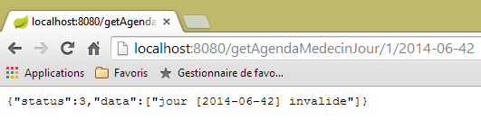 |
ou estes, se o número do médico for inválido:
 |
2.12.12. O URL [/getMedecinById/{id}]
O URL [/getMedecinById/{id}] é processado pelo seguinte método do controlador [RdvMedecinsController]:
@RequestMapping(value = "/getMedecinById/{id}", method = RequestMethod.GET)
public Reponse getMedecinById(@PathVariable("id") long id) {
// estado do aplicativo
if (messages != null) {
return new Reponse(-1, messages);
}
// recuperamos o médico
return getMedecin(id);
}
Na linha 8, o método [getMedecin] é o seguinte:
private Reponse getMedecin(long id) {
// recuperar o médico
Medecin médecin = null;
try {
médecin = application.getMedecinById(id);
} catch (Exception e1) {
return new Reponse(1, Static.getErreursForException(e1));
}
// o médico existe?
if (médecin == null) {
return new Reponse(2, null);
}
// ok
return new Reponse(0, médecin);
}
Os resultados obtidos são os seguintes:
ou estes, caso o número do médico esteja incorreto:
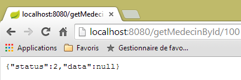 |
2.12.13. O URL [/getClientById/{id}]
O URL [/getClientById/{id}] é processado pelo método a seguir do controlador [RdvMedecinsController]:
@RequestMapping(value = "/getClientById/{id}", method = RequestMethod.GET)
public Reponse getClientById(@PathVariable("id") long id) {
// status do aplicativo
if (messages != null) {
return new Reponse(-1, messages);
}
// recuperando o cliente
return getClient(id);
}
Na linha 8, o método [getClient] é o seguinte:
private Reponse getClient(long id) {
// recuperando o cliente
Client client = null;
try {
client = application.getClientById(id);
} catch (Exception e1) {
return new Reponse(1, Static.getErreursForException(e1));
}
// cliente já existe?
if (client == null) {
return new Reponse(2, null);
}
// ok
return new Reponse(0, client);
}
Os resultados obtidos são os seguintes:
ou estes, caso o número do cliente esteja incorreto:
 |
2.12.14. O URL [/getCreneauById/{id}]
O URL [/getCreneauById/{id}] é processado pelo seguinte método do controlador [RdvMedecinsController]:
@RequestMapping(value = "/getCreneauById/{id}", method = RequestMethod.GET)
public Reponse getCreneauById(@PathVariable("id") long id) {
// status do aplicativo
if (messages != null) {
return new Reponse(-1, messages);
}
// recuperando o horário
Reponse réponse = getCreneau(id);
if (réponse.getStatus() == 0) {
réponse.setData(Static.getMapForCreneau((Creneau) réponse.getData()));
}
// resultado
return réponse;
}
Na linha 8, o método [getCreneau] é o seguinte:
private Reponse getCreneau(long id) {
// recuperando o horário
Creneau créneau = null;
try {
créneau = application.getCreneauById(id);
} catch (Exception e1) {
return new Reponse(1, Static.getErreursForException(e1));
}
// intervalo já existe?
if (créneau == null) {
return new Reponse(2, null);
}
// ok
return new Reponse(0, créneau);
}
Os resultados obtidos são os seguintes:
|
ou estes, caso o número do intervalo esteja incorreto:
 |
2.12.15. O URL [/getRvById/{id}]
O URL [/getRvById/{id}] é processado pelo seguinte método do controlador [RdvMedecinsController]:
@RequestMapping(value = "/getRvById/{id}", method = RequestMethod.GET)
public Reponse getRvById(@PathVariable("id") long id) {
// estado do aplicativo
if (messages != null) {
return new Reponse(-1, messages);
}
// recuperando o rv
Reponse réponse = getRv(id);
if (réponse.getStatus() == 0) {
réponse.setData(Static.getMapForRv2((Rv) réponse.getData()));
}
// resultado
return réponse;
}
Na linha 8, o método [getRv] é o seguinte:
private Reponse getRv(long id) {
// recuperando o Rv
Rv rv = null;
try {
rv = application.getRvById(id);
} catch (Exception e1) {
return new Reponse(1, Static.getErreursForException(e1));
}
// Rv já existe?
if (rv == null) {
return new Reponse(2, null);
}
// ok
return new Reponse(0, rv);
}
Na linha 10, o método [Static.getMapForRv2] é o seguinte:
// Rv --> Mapa
public static Map<String, Object> getMapForRv2(Rv rv) {
// há algo a ser feito?
if (rv == null) {
return null;
}
// dicionário <String,Object>
Map<String, Object> hash = new HashMap<String, Object>();
hash.put("id", rv.getId());
hash.put("idClient", rv.getIdClient());
hash.put("idCreneau", rv.getIdCreneau());
// retornamos o dicionário
return hash;
}
Os resultados obtidos são os seguintes:
|
ou estes, caso o número do compromisso esteja incorreto:
 |
2.12.16. O URL [/ajouterRv]
O URL [/ajouterRv] é processado pelo seguinte método do controlador [RdvMedecinsController]:
@RequestMapping(value = "/ajouterRv", method = RequestMethod.POST, consumes = "application/json; charset=UTF-8")
public Reponse ajouterRv(@RequestBody PostAjouterRv post) {
// estado do aplicativo
if (messages != null) {
return new Reponse(-1, messages);
}
// recuperamos os valores enviados
String jour = post.getJour();
long idCreneau = post.getIdCreneau();
long idClient = post.getIdClient();
// verifica-se a data
Date jourAgenda = null;
SimpleDateFormat sdf = new SimpleDateFormat("yyyy-MM-dd");
sdf.setLenient(false);
try {
jourAgenda = sdf.parse(jour);
} catch (ParseException e) {
return new Reponse(6, null);
}
// recuperamos o horário
Reponse réponse = getCreneau(idCreneau);
if (réponse.getStatus() != 0) {
return réponse;
}
Creneau créneau = (Creneau) réponse.getData();
// recupera-se o cliente
réponse = getClient(idClient);
if (réponse.getStatus() != 0) {
réponse.incrStatusBy(2);
return réponse;
}
Client client = (Client) réponse.getData();
// adiciona-se o compromisso
Rv rv = null;
try {
rv = application.ajouterRv(jourAgenda, créneau, client);
} catch (Exception e1) {
return new Reponse(5, Static.getErreursForException(e1));
}
// retorna a resposta
return new Reponse(0, Static.getMapForRv(rv));
}
Não há nada aqui que já não tenha sido visto. Na linha 41, retorna-se o compromisso que foi adicionado na linha 36.
Os resultados obtidos ficam assim com o cliente [Advanced Rest Client]:
 |
ou assim, se, por exemplo, for fornecido um número de horário inexistente:
 |
|
2.12.17. O URL [/supprimerRv]
O URL [/supprimerRv] é processado pelo seguinte método do controlador [RdvMedecinsController]:
@RequestMapping(value = "/supprimerRv", method = RequestMethod.POST, consumes = "application/json; charset=UTF-8")
public Reponse supprimerRv(@RequestBody PostSupprimerRv post) {
// estado do aplicativo
if (messages != null) {
return new Reponse(-1, messages);
}
// recuperando os valores lançados
long idRv = post.getIdRv();
// recuperação do rv
Reponse réponse = getRv(idRv);
if (réponse.getStatus() != 0) {
return réponse;
}
// exclusão do Rv
try {
application.supprimerRv(idRv);
} catch (Exception e1) {
return new Reponse(3, Static.getErreursForException(e1));
}
// ok
return new Reponse(0, null);
}
Os resultados obtidos pelo são os seguintes:
 |
ou estes, caso o número do compromisso não exista:
 |
Concluímos a parte do controlador. Agora, vamos ver como configurar o projeto.
2.12.18. Configuração do serviço web
 |
A classe de configuração [AppConfig] é a seguinte:
package rdvmedecins.web.config;
import org.springframework.boot.autoconfigure.EnableAutoConfiguration;
import org.springframework.context.annotation.ComponentScan;
import org.springframework.context.annotation.Import;
import rdvmedecins.config.DomainAndPersistenceConfig;
@EnableAutoConfiguration
@ComponentScan(basePackages = { "rdvmedecins.web" })
@Import({ DomainAndPersistenceConfig.class })
public class AppConfig {
}
- linha 9: entramos no modo [AutoConfiguration] para que o Spring Boot possa configurar o projeto com base nos arquivos que encontrar no Classpath do projeto;
- linha 10: solicita-se que os componentes Spring sejam procurados no pacote [rdvmedecins.web] e seus descendentes. É assim que serão encontrados os componentes:
- [@RestController RdvMedecinsController] no pacote [rdvmedecins.web.controllers];
- [@Component ApplicationModel] no pacote [rdvmedecins.web.models];
- linha 11: importa-se a classe [DomainAndPersistenceConfig], que configura o projeto [rdvmedecins-metier-dao] para ter acesso aos beans desse projeto;
2.12.19. A classe executável do serviço web
 |
A classe [Boot] é a seguinte:
package rdvmedecins.web.boot;
import org.springframework.boot.SpringApplication;
import rdvmedecins.web.config.AppConfig;
public class Boot {
public static void main(String[] args) {
SpringApplication.run(AppConfig.class, args);
}
}
Na linha 10, o método estático [SpringApplication.run] é executado tendo como primeiro parâmetro a classe [AppConfig] de configuração do projeto. Esse método realizará a autoconfiguração do projeto, iniciará o servidor Tomcat integrado nas dependências e implantará nele o controlador [RdvMedecinsController].
Os logs de execução são os seguintes:
- linha 17: o servidor Tomcat é iniciado;
- linhas 23-31: as camadas [métier, DAO, JPA] são inicializadas;
- linha 34: o método que processa o URL [/getRvMedecinJour/{idMedecin}/{jour}] foi descoberto. Esse processo de descoberta dos métodos do controlador se repete até a linha 44;
- linha 52: o servlet do Spring MVC [DispatcherServlet] está pronto para responder às solicitações dos clientes da web;
Agora temos um serviço web operacional que pode ser consultado por meio de um cliente web. Passaremos agora a abordar a segurança desse serviço: queremos que apenas determinadas pessoas possam gerenciar as consultas médicas. Para isso, utilizaremos o framework Spring Security, um componente do ecossistema Spring.
2.13. Introdução ao Spring Security
Vamos importar novamente um guia do Spring, seguindo as etapas 1 a 3 abaixo:
 |
 |
O projeto é composto pelos seguintes elementos:
- na pasta [templates], encontram-se as páginas HTML do projeto;
- [Application]: é a classe executável do projeto;
- [MvcConfig]: é a classe de configuração do Spring MVC;
- [WebSecurityConfig]: é a classe de configuração do Spring Security;
2.13.1. Configuração do Maven
O projeto [3] é um projeto Maven. Vamos examinar seu arquivo [pom.xml] para conhecer suas dependências:
<parent>
<groupId>org.springframework.boot</groupId>
<artifactId>spring-boot-starter-parent</artifactId>
<version>1.1.1.RELEASE</version>
</parent>
<dependencies>
<dependency>
<groupId>org.springframework.boot</groupId>
<artifactId>spring-boot-starter-thymeleaf</artifactId>
</dependency>
<dependency>
<groupId>org.springframework.boot</groupId>
<artifactId>spring-boot-starter-security</artifactId>
</dependency>
</dependencies>
- linhas 1-5: o projeto é um projeto Spring Boot;
- linhas 8-11: dependência do framework [Thymeleaf], que permite criar páginas HTML dinâmicas. Esse framework pode substituir as páginas JSP (Java Server Pages), que até recentemente eram o padrão, pelo framework de visualizações do Spring MVC;
- linhas 12-15: dependência do framework Spring Security;
2.13.2. As visualizações Thymeleaf
 |
A visualização [home.html] é a seguinte:
 |
<!DOCTYPE html>
<html xmlns="http://www.w3.org/1999/xhtml"
xmlns:th="http://www.thymeleaf.org"
xmlns:sec="http://www.thymeleaf.org/thymeleaf-extras-springsecurity3">
<head>
<title>Spring Security Example</title>
</head>
<body>
<h1>Welcome!</h1>
<p>
Click <a th:href="@{/hello}">here</a> to see a greeting.
</p>
</body>
</html>
- Os atributos [th:xx] são atributos do Thymeleaf. Eles são interpretados pelo Thymeleaf antes que a página HTML seja enviada ao cliente. O cliente não os vê;
- linha 12: o atributo [th:href="@{/hello}"] irá gerar o atributo [href] da tag <a>. O valor [@{/hello}] irá gerar o caminho [<context>/hello], onde [context] é o contexto do aplicativo web;
O código HTML gerado é o seguinte:
- linha 10: o contexto da aplicação é a raiz /;
A visualização [hello.html] é a seguinte:
 |
<!DOCTYPE html>
<html xmlns="http://www.w3.org/1999/xhtml"
xmlns:th="http://www.thymeleaf.org"
xmlns:sec="http://www.thymeleaf.org/thymeleaf-extras-springsecurity3">
<head>
<title>Hello World!</title>
</head>
<body>
<h1 th:inline="text">Hello [[${#httpServletRequest.remoteUser}]]!</h1>
<form th:action="@{/logout}" method="post">
<input type="submit" value="Sign Out" />
</form>
</body>
</html>
- linha 9: O atributo [th:inline="text"] irá gerar o texto da tag <h1>. Esse texto contém uma expressão $ que deve ser avaliada. O elemento [[${#httpServletRequest.remoteUser}]] é o valor do atributo [RemoteUser] da consulta HTTP atual. Trata-se do nome do usuário conectado;
- linha 10: um formulário HTML. O atributo [th:action="@{/logout}"] irá gerar o atributo [action] da tag [form]. O valor [@{/logout}] irá gerar o caminho [<context>/logout], em que [context] é o contexto do aplicativo web;
O código HTML gerado é o seguinte:
- linha 8: a tradução de Hello [[${#httpServletRequest.remoteUser}]]!;
- linha 9: a tradução de @{/logout};
- linha 11: um campo oculto chamado (atributo name) _csrf;
A última visualização [login.html] é a seguinte:
 |
<!DOCTYPE html>
<html xmlns="http://www.w3.org/1999/xhtml"
xmlns:th="http://www.thymeleaf.org"
xmlns:sec="http://www.thymeleaf.org/thymeleaf-extras-springsecurity3">
<head>
<title>Spring Security Example</title>
</head>
<body>
<div th:if="${param.error}">Invalid username and password.</div>
<div th:if="${param.logout}">You have been logged out.</div>
<form th:action="@{/login}" method="post">
<div>
<label> User Name : <input type="text" name="username" />
</label>
</div>
<div>
<label> Password: <input type="password" name="password" />
</label>
</div>
<div>
<input type="submit" value="Sign In" />
</div>
</form>
</body>
</html>
- linha 9: o atributo [th:if="${param.error}"] faz com que a tag <div> só seja gerada se o URL, que exibe a página de login, contiver o parâmetro [error] (http://context/login?error);
- linha 10: o atributo [th:if="${param.logout}"] faz com que a tag <div> só seja gerada se o URL, que exibe a página de login, contiver o parâmetro [logout] (http://context/login?logout);
- linhas 11-23: um formulário HTML;
- linha 11: o formulário será enviado para o URL [<context>/login], onde <context> é o contexto do aplicativo web;
- linha 13: um campo de entrada chamado [username];
- linha 17: um campo de entrada chamado [password];
O código HTML gerado é o seguinte:
Observe-se, na linha 21, que o Thymeleaf adicionou um campo oculto chamado [_csrf].
2.13.3. Configuração do Spring MVC
 |
A classe [MvcConfig] configura o framework Spring MVC:
package hello;
import org.springframework.context.annotation.Configuration;
import org.springframework.web.servlet.config.annotation.ViewControllerRegistry;
import org.springframework.web.servlet.config.annotation.WebMvcConfigurerAdapter;
@Configuration
public class MvcConfig extends WebMvcConfigurerAdapter {
@Override
public void addViewControllers(ViewControllerRegistry registry) {
registry.addViewController("/home").setViewName("home");
registry.addViewController("/").setViewName("home");
registry.addViewController("/hello").setViewName("hello");
registry.addViewController("/login").setViewName("login");
}
}
- linha 7: a anotação [@Configuration] transforma a classe [MvcConfig] em uma classe de configuração;
- linha 8: a classe [MvcConfig] estende a classe [WebMvcConfigurerAdapter] para redefinir alguns de seus métodos;
- linha 10: redefinição de um método da classe pai;
- linhas 11 a 16: o método [addViewControllers] permite associar URL a visualizações HTML. São feitas as seguintes associações:
visualização | |
/templates/home.html | |
/templates/hello.html | |
/templates/login.html |
O sufixo [html] e a pasta [templates] são os valores padrão utilizados pelo Thymeleaf. Eles podem ser alterados por meio da configuração. A pasta [templates] deve estar na raiz do Classpath do projeto:
 |
Acima de [1], as pastas [main] e [resources] são ambas pastas de origem (source folders). Isso significa que seu conteúdo estará na raiz do Classpath do projeto. Portanto, no [2], as pastas [hello] e [templates] estarão na raiz do Classpath.
2.13.4. Configuração do Spring Security
 |
A classe [WebSecurityConfig] configura o framework Spring Security:
package hello;
import org.springframework.context.annotation.Configuration;
import org.springframework.security.config.annotation.authentication.builders.AuthenticationManagerBuilder;
import org.springframework.security.config.annotation.web.builders.HttpSecurity;
import org.springframework.security.config.annotation.web.configuration.WebSecurityConfigurerAdapter;
import org.springframework.security.config.annotation.web.servlet.configuration.EnableWebMvcSecurity;
@Configuration
@EnableWebMvcSecurity
public class WebSecurityConfig extends WebSecurityConfigurerAdapter {
@Override
protected void configure(HttpSecurity http) throws Exception {
http.authorizeRequests().antMatchers("/", "/home").permitAll().anyRequest().authenticated();
http.formLogin().loginPage("/login").permitAll().and().logout().permitAll();
}
@Override
protected void configure(AuthenticationManagerBuilder auth) throws Exception {
auth.inMemoryAuthentication().withUser("user").password("password").roles("USER");
}
}
- linha 9: a anotação [@Configuration] transforma a classe [WebSecurityConfig] em uma classe de configuração;
- linha 10: a anotação [@EnableWebSecurity] torna a classe [WebSecurityConfig] uma classe de configuração do Spring Security;
- linha 11: a classe [WebSecurity] estende a classe [WebSecurityConfigurerAdapter] para redefinir alguns de seus métodos;
- linha 12: redefinição de um método da classe pai;
- linhas 13 a 16: o método [configure(HttpSecurity http)] é redefinido para definir os direitos de acesso às diferentes URL do aplicativo;
- linha 14: o método [http.authorizeRequests()] permite associar URL a direitos de acesso. São feitas as seguintes associações:
regra | código | |
acesso sem autenticação | | |
acesso somente com autenticação |
- linha 15: define o método de autenticação. A autenticação é feita por meio de um formulário URL [/login] acessível a todos [http.formLogin().loginPage("/login").permitAll()]. O logout também está acessível a todos.
- linhas 19-21: redefinem o método [configure(AuthenticationManagerBuilder auth)] que gerencia os usuários;
- linha 20: a autenticação é feita com usuários definidos de forma “estática” [auth.inMemoryAuthentication()]. Um usuário é definido aqui com o login [user], a senha [password] e a função [USER]. É possível conceder os mesmos direitos a usuários com a mesma função;
2.13.5. Classe executável
 |
A classe [Application] é a seguinte:
package hello;
import org.springframework.boot.autoconfigure.EnableAutoConfiguration;
import org.springframework.boot.SpringApplication;
import org.springframework.context.annotation.ComponentScan;
import org.springframework.context.annotation.Configuration;
@EnableAutoConfiguration
@Configuration
@ComponentScan
public class Application {
public static void main(String[] args) throws Throwable {
SpringApplication.run(Application.class, args);
}
}
- linha 8: a anotação [@EnableAutoConfiguration] solicita ao Spring Boot (linha 3) que realize a configuração que o desenvolvedor não terá feito explicitamente;
- linha 9: transforma a classe [Application] em uma classe de configuração do Spring;
- linha 10: solicita a varredura da pasta da classe [Application] para localizar componentes do Spring. As duas classes [MvcConfig] e [WebSecurityConfig] serão, assim, detectadas, pois possuem a anotação [@Configuration];
- linha 13: o método [main] da classe executável;
- linha 14: o método estático [SpringApplication.run] é executado com a classe de configuração [Application] como parâmetro. Já nos deparamos com esse processo e sabemos que o servidor Tomcat incorporado nas dependências Maven do projeto será iniciado e o projeto será implantado nele. Vimos que quatro instâncias de URL eram gerenciadas por [/, /home, /login, /hello] e que algumas estavam protegidas por direitos de acesso.
2.13.6. Testes da aplicação
Vamos começar solicitando o URL [/], que é um dos quatro URL aceitos. Ele está associado à visualização [/templates/home.html]:
 |
A URL solicitada, [/], está acessível a todos. É por isso que a obtivemos. O link [here] é o seguinte:
O URL [/hello] será solicitado ao clicar no link. Este está protegido:
regra | código | |
acesso sem autenticação | | |
acesso somente com autenticação |
É necessário estar autenticado para obtê-lo. O Spring Security redirecionará então o navegador do cliente para a página de autenticação. De acordo com a configuração apresentada, trata-se da página URL [/login]. Esta página está acessível a todos:
http.formLogin().loginPage("/login").permitAll().and().logout().permitAll();
Assim, obtemos [1]:
 |
O código-fonte da página obtida é o seguinte:
- na linha 7, aparece um campo oculto que não está na página original [login.html]. Foi o Thymeleaf que o adicionou. Esse código, chamado CSRF (Cross Site Request Forgery), tem como objetivo eliminar uma falha de segurança. Esse token deve ser enviado de volta ao Spring Security junto com a autenticação para que esta seja aceita;
Lembramos que apenas o usuário user/password é reconhecido pelo Spring Security. Se inserirmos qualquer outra coisa em [2], obtemos a mesma página com uma mensagem de erro em [3]. O Spring Security redirecionou o navegador para a página URL [http://localhost:8080/login?error]. A presença do parâmetro [error] acionou a exibição da tag:
<div th:if="${param.error}">Invalid username and password.</div>
Agora, vamos inserir os valores esperados para usuário/senha [4]:
 |
- em [4], fazemos o login;
- em [5], o Spring Security nos redireciona para URL e [/hello], pois era URL que estávamos solicitando quando fomos redirecionados para a página de login. A identidade do usuário foi exibida na seguinte linha de [hello.html]:
A página [5] exibe o seguinte formulário:
<form th:action="@{/logout}" method="post">
<input type="submit" value="Sign Out" />
</form>
Ao clicar no botão [Sign Out], será executado um POST no URL [/logout]. Este, assim como o URL e o [/login], está acessível a todos:
http.formLogin().loginPage("/login").permitAll().and().logout().permitAll();
Em nossa associação URL / visualizações, não definimos nada para o URL e o [/logout]. O que vai acontecer? Vamos testar:
 |
- em [6], clicamos no botão [Sign Out];
- em [7], vemos que fomos redirecionados para o URL [http://localhost:8080/login?logout]. Foi o Spring Security que solicitou esse redirecionamento. A presença do parâmetro [logout] no URL fez com que a seguinte linha fosse exibida na visualização:
<div th:if="${param.logout}">You have been logged out.</div>
2.13.7. Conclusão
No exemplo anterior, poderíamos ter escrito a aplicação web primeiro e, em seguida, implementado a segurança. O Spring Security não é intrusivo. É possível implementar a segurança em uma aplicação web já desenvolvida. Além disso, descobrimos os seguintes pontos:
- é possível definir uma página de autenticação;
- a autenticação deve ser acompanhada do token CSRF emitido pelo Spring Security;
- se a autenticação falhar, o usuário é redirecionado para a página de autenticação, além disso, com um parâmetro “error” no token URL;
- se a autenticação for bem-sucedida, o usuário é redirecionado para a página solicitada no momento em que a autenticação ocorreu. Se a página de autenticação for solicitada diretamente, sem passar por uma página intermediária, o Spring Security nos redireciona para o URL [/] (esse caso não foi apresentado);
- o usuário se desconecta ao acessar a página URL [/logout] com um POST. O Spring Security nos redireciona então para a página de autenticação com o parâmetro logout no URL;
Todas essas conclusões se baseiam nos comportamentos padrão do Spring Security. Esses comportamentos podem ser alterados por meio de configuração, redefinindo certos métodos da classe [WebSecurityConfigurerAdapter].
O tutorial anterior não nos ajudará muito daqui para frente. De fato, vamos utilizar:
- um banco de dados para armazenar os usuários, suas senhas e suas funções;
- autenticação por cabeçalho HTTP;
Existem poucos tutoriais sobre o que queremos fazer aqui. A solução que será proposta é uma combinação de códigos encontrados aqui e ali.
2.14. Implementação da segurança no serviço web de agendamento
2.14.1. O banco de dados
O banco de dados [rdvmedecins] está sendo atualizado para incluir os usuários, suas senhas e suas funções. Três novas tabelas são criadas:
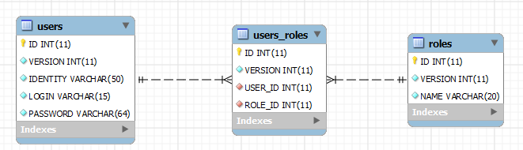
Tabela [USERS]: os usuários
- ID: chave primária;
- VERSION: coluna de controle de versão da linha;
- IDENTITY: uma identidade descritiva do usuário;
- LOGIN: o login do usuário;
- PASSWORD: sua senha;
Na tabela USERS, as senhas não são armazenadas em texto simples:
 |
O algoritmo que criptografa as senhas é o algoritmo BCRYPT.
Tabela [ROLES]: as funções
- ID: chave primária;
- VERSION: coluna de controle de versão da linha;
- NAME: nome da função. Por padrão, o Spring Security espera nomes no formato ROLE_XX, por exemplo, ROLE_ADMIN ou ROLE_GUEST;
 |
Tabela [USERS_ROLES]: tabela de junção USERS / ROLES
Um usuário pode ter várias funções, e uma função pode abranger vários usuários. Temos uma relação muitos-para-muitos representada pela tabela [USERS_ROLES].
- ID: chave primária;
- VERSION: coluna de controle de versão da linha;
- USER_ID: identificador de um usuário;
- ROLE_ID: identificador de uma função;
 |
Como estamos modificando o banco de dados, todas as camadas do projeto [métier, DAO, JPA] devem ser modificadas:
 |
2.14.2. O novo projeto Eclipse do [métier, DAO, JPA]
Duplicamos o projeto inicial [rdvmedecins-metier-dao] como [rdvmedecins-metier-dao-v2]:
 |
- em [1]: o novo projeto;
- em [2]: as alterações decorrentes da consideração de segurança foram reunidas em um único pacote [rdvmedecins.security]. Esses novos elementos pertencem às camadas [JPA] e [DAO], mas, por uma questão de simplicidade, eu os reuni em um único pacote.
2.14.3. As novas entidades [JPA]
 |
A camada JPA define três novas entidades:
 |
A classe [User] é a imagem da tabela [USERS]:
package rdvmedecins.entities;
import javax.persistence.Column;
import javax.persistence.Entity;
import javax.persistence.Table;
@Entity
@Table(name = "USERS")
public class User extends AbstractEntity {
private static final long serialVersionUID = 1L;
// características
private String identity;
private String login;
private String password;
// fabricante
public User() {
}
public User(String identity, String login, String password) {
this.identity = identity;
this.login = login;
this.password = password;
}
// identidade
@Override
public String toString() {
return String.format("User[%s,%s,%s]", identity, login, password);
}
// getters e setters
....
}
- linha 9: a classe estende a classe [AbstractEntity], já utilizada para as outras entidades;
- linhas 13-15: não se especifica um nome para as colunas porque elas têm o mesmo nome que os campos a elas associados;
A classe [Role] é o espelho da tabela [ROLES]:
package rdvmedecins.entities;
import javax.persistence.Column;
import javax.persistence.Entity;
import javax.persistence.Table;
@Entity
@Table(name = "ROLES")
public class Role extends AbstractEntity {
private static final long serialVersionUID = 1L;
// características
private String name;
// fabricantes
public Role() {
}
public Role(String name) {
this.name = name;
}
// identidade
@Override
public String toString() {
return String.format("Role[%s]", name);
}
// getters e setters
...
}
A classe [UserRole] é a imagem da tabela [USERS_ROLES]:
package rdvmedecins.entities;
import javax.persistence.Entity;
import javax.persistence.JoinColumn;
import javax.persistence.ManyToOne;
import javax.persistence.Table;
@Entity
@Table(name = "USERS_ROLES")
public class UserRole extends AbstractEntity {
private static final long serialVersionUID = 1L;
// um UserRole faz referência a um User
@ManyToOne
@JoinColumn(name = "USER_ID")
private User user;
// um UserRole faz referência a um Role
@ManyToOne
@JoinColumn(name = "ROLE_ID")
private Role role;
// getters e setters
...
}
- linhas 15-17: definem a chave estrangeira da tabela [USERS_ROLES] para a tabela [USERS];
- linhas 19-21: definem a chave estrangeira da tabela [USERS_ROLES] para a tabela [ROLES];
2.14.4. Alterações na camada [DAO]
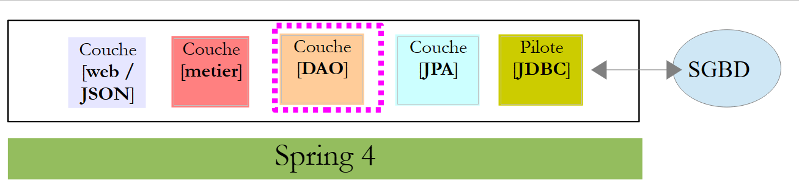 |
A camada [DAO] é ampliada com três novos [Repository]:
 |
A interface [UserRepository] gerencia o acesso às entidades [User]:
package rdvmedecins.repositories;
import org.springframework.data.jpa.repository.Query;
import org.springframework.data.repository.CrudRepository;
import rdvmedecins.entities.Role;
import rdvmedecins.entities.User;
public interface UserRepository extends CrudRepository<User, Long> {
// lista de funções de um usuário identificado por seu ID
@Query("select ur.role from UserRole ur where ur.user.id=?1")
Iterable<Role> getRoles(long id);
// lista de funções de um usuário identificado por seu login e senha
@Query("select ur.role from UserRole ur where ur.user.login=?1 and ur.user.password=?2")
Iterable<Role> getRoles(String login, String password);
// busca de um usuário pelo login
User findUserByLogin(String login);
}
- linha 9: a interface [UserRepository] estende a interface [CrudRepository] do Spring Data (linha 4);
- linhas 12-13: o método [getRoles(User user)] permite obter todas as funções de um usuário identificado por seu [id]
- linhas 16-17: o mesmo, mas para um usuário identificado por seu login e senha;
A interface [RoleRepository] gerencia o acesso às entidades [Role]:
package rdvmedecins.security;
import org.springframework.data.repository.CrudRepository;
public interface RoleRepository extends CrudRepository<Role, Long> {
// busca de uma função pelo nome
Role findRoleByName(String name);
}
- linha 5: a interface [RoleRepository] estende a interface [CrudRepository];
- linha 8: é possível pesquisar uma função pelo nome;
A interface [userRoleRepository] gerencia o acesso às entidades [UserRole]:
package rdvmedecins.security;
import org.springframework.data.repository.CrudRepository;
public interface UserRoleRepository extends CrudRepository<UserRole, Long> {
}
- linha 5: a interface [UserRoleRepository] limita-se a estender a interface [CrudRepository] sem adicionar novos métodos a ela;
2.14.5. As classes de gerenciamento de usuários e funções
 |
O Spring Security exige a criação de uma classe que implemente a seguinte interface [UsersDetail]:
 |
Essa interface é implementada aqui pela classe [AppUserDetails]:
package rdvmedecins.security;
import java.util.ArrayList;
import java.util.Collection;
import org.springframework.security.core.GrantedAuthority;
import org.springframework.security.core.authority.SimpleGrantedAuthority;
import org.springframework.security.core.userdetails.UserDetails;
public class AppUserDetails implements UserDetails {
private static final long serialVersionUID = 1L;
// propriedades
private User user;
private UserRepository userRepository;
// construtores
public AppUserDetails() {
}
public AppUserDetails(User user, UserRepository userRepository) {
this.user = user;
this.userRepository = userRepository;
}
// -------------------------interface
@Override
public Collection<? extends GrantedAuthority> getAuthorities() {
Collection<GrantedAuthority> authorities = new ArrayList<>();
for (Role role : userRepository.getRoles(user.getId())) {
authorities.add(new SimpleGrantedAuthority(role.getName()));
}
return authorities;
}
@Override
public String getPassword() {
return user.getPassword();
}
@Override
public String getUsername() {
return user.getLogin();
}
@Override
public boolean isAccountNonExpired() {
return true;
}
@Override
public boolean isAccountNonLocked() {
return true;
}
@Override
public boolean isCredentialsNonExpired() {
return true;
}
@Override
public boolean isEnabled() {
return true;
}
// getters e setters
...
}
- linha 10: a classe [AppUserDetails] implementa a interface [UserDetails];
- linhas 15-16: a classe encapsula um usuário (linha 15) e o repositório que permite obter os detalhes desse usuário (linha 16);
- linhas 22-25: o construtor que instancia a classe com um usuário e seu repositório;
- linhas 28-35: implementação do método [getAuthorities] da interface [UserDetails]. Ele deve construir uma coleção de elementos do tipo [GrantedAuthority] ou derivado. Aqui, utilizamos o tipo derivado [SimpleGrantedAuthority] (linha 32), que encapsula o nome de uma das funções do usuário da linha 15;
- linhas 31-33: percorremos a lista de funções do usuário da linha 15 para construir uma lista de elementos do tipo [SimpleGrantedAuthority];
- linhas 38-40: implementam o método [getPassword] da interface [UserDetails]. Retorna-se a senha do usuário da linha 15;
- linhas 38-40: implementam o método [getUserName] da interface [UserDetails]. Retorna-se o login do usuário da linha 15;
- linhas 47-50: a conta do usuário nunca expira;
- linhas 52-55: a conta do usuário nunca é bloqueada;
- linhas 57-60: as credenciais do usuário nunca expiram;
- linhas 62-65: a conta do usuário está sempre ativa;
O Spring Security também exige a existência de uma classe que implemente a interface [AppUserDetailsService]:
 |
Essa interface é implementada pela seguinte classe [AppUserDetails]:
package rdvmedecins.security;
import org.springframework.beans.factory.annotation.Autowired;
import org.springframework.security.core.userdetails.UserDetails;
import org.springframework.security.core.userdetails.UserDetailsService;
import org.springframework.security.core.userdetails.UsernameNotFoundException;
import org.springframework.stereotype.Service;
@Service
public class AppUserDetailsService implements UserDetailsService {
@Autowired
private UserRepository userRepository;
@Override
public UserDetails loadUserByUsername(String login) throws UsernameNotFoundException {
// buscando o usuário pelo login
User user = userRepository.findUserByLogin(login);
// encontrado?
if (user == null) {
throw new UsernameNotFoundException(String.format("login [%s] inexistant", login));
}
// retornamos os detalhes do usuário
return new AppUserDetails(user, userRepository);
}
}
- linha 9: a classe será um componente Spring e, portanto, estará disponível em seu contexto;
- linhas 12-13: o componente [UserRepository] será injetado aqui;
- linhas 16-25: implementação do método [loadUserByUsername] da interface [UserDetailsService] (linha 10). O parâmetro é o login do usuário;
- linha 18: o usuário é pesquisado por meio de seu login;
- linhas 20-22: se ele não for encontrado, uma exceção é lançada;
- linha 24: um objeto [AppUserDetails] é criado e renderizado. Ele é, de fato, do tipo [UserDetails] (linha 16);
2.14.6. Testes da camada [DAO]
 |
Primeiramente, criamos uma classe executável [CreateUser] capaz de criar um usuário com uma função:
package rdvmedecins.security;
import org.springframework.context.annotation.AnnotationConfigApplicationContext;
import org.springframework.security.crypto.bcrypt.BCrypt;
import rdvmedecins.config.DomainAndPersistenceConfig;
import rdvmedecins.security.Role;
import rdvmedecins.security.RoleRepository;
import rdvmedecins.security.User;
import rdvmedecins.security.UserRepository;
import rdvmedecins.security.UserRole;
import rdvmedecins.security.UserRoleRepository;
public class CreateUser {
public static void main(String[] args) {
// sintaxe: login senha roleName
// são necessários três parâmetros
if (args.length != 3) {
System.out.println("Syntaxe : [pg] user password role");
System.exit(0);
}
// recuperando os parâmetros
String login = args[0];
String password = args[1];
String roleName = String.format("ROLE_%s", args[2].toUpperCase());
// contexto Spring
AnnotationConfigApplicationContext context = new AnnotationConfigApplicationContext(DomainAndPersistenceConfig.class);
UserRepository userRepository = context.getBean(UserRepository.class);
RoleRepository roleRepository = context.getBean(RoleRepository.class);
UserRoleRepository userRoleRepository = context.getBean(UserRoleRepository.class);
// a função já existe?
Role role = roleRepository.findRoleByName(roleName);
// se não existir, criá-lo-emos
if (role == null) {
role = roleRepository.save(new Role(roleName));
}
// o usuário já existe?
User user = userRepository.findUserByLogin(login);
// se não existir, criá-lo-emos
if (user == null) {
// a senha é hashada com bcrypt
String crypt = BCrypt.hashpw(password, BCrypt.gensalt());
// salvamos o usuário
user = userRepository.save(new User(login, login, crypt));
// criamos a associação com a função
userRoleRepository.save(new UserRole(user, role));
} else {
// o usuário já existe — ele possui a função solicitada?
boolean trouvé = false;
for (Role r : userRepository.getRoles(user.getId())) {
if (r.getName().equals(roleName)) {
trouvé = true;
break;
}
}
// se não for encontrado, cria-se a relação com a função
if (!trouvé) {
userRoleRepository.save(new UserRole(user, role));
}
}
// fechamento do contexto Spring
context.close();
}
}
- linha 17: a classe espera três argumentos que definem um usuário: seu login, sua senha e sua função;
- linhas 25-27: os três parâmetros são recuperados;
- linha 29: o contexto Spring é construído a partir da classe de configuração [DomainAndPersistenceConfig]. Essa classe já existia no projeto anterior. Ela deve ser alterada da seguinte forma:
@EnableJpaRepositories(basePackages = { "rdvmedecins.repositories", "rdvmedecins.security" })
@EnableAutoConfiguration
@ComponentScan(basePackages = { "rdvmedecins" })
@EntityScan(basePackages = { "rdvmedecins.entities", "rdvmedecins.security" })
@EnableTransactionManagement
public class DomainAndPersistenceConfig {
....
}
- linha 1: é necessário indicar que agora existem componentes [Repository] no pacote [rdvmedecins.security];
- linha 4: é preciso indicar que agora há entidades JPA no pacote [rdvmedecins.security];
Voltemos ao código de criação de um usuário:
- linhas 30-32: recuperamos as referências dos três [Repository] que podem ser úteis para criar o usuário;
- linha 34: verifica-se se a função já existe;
- linhas 36-38: se não for o caso, criamos a função no banco de dados. Ela terá um nome do tipo [ROLE_XX];
- linha 40: verifica-se se o login já existe;
- linhas 42-49: se o login não existir, ele é criado no banco de dados;
- linha 44: criptografamos a senha. Aqui, utilizamos a classe [BCrypt] do Spring Security (linha 4). Portanto, precisamos dos arquivos desse framework. O arquivo [pom.xml] inclui uma nova dependência:
<dependency>
<groupId>org.springframework.boot</groupId>
<artifactId>spring-boot-starter-security</artifactId>
</dependency>
- linha 46: o usuário é armazenado no banco de dados;
- linha 48: assim como a relação que o vincula à sua função;
- linhas 51-57: caso o login já exista – verifica-se, então, se entre suas funções já se encontra a função que se deseja atribuir a ele;
- linhas 59-61: se a função procurada não for encontrada, cria-se uma linha na tabela [USERS_ROLES] para vincular o usuário à sua função;
- não há proteção contra possíveis exceções. Trata-se de uma classe de suporte para criar rapidamente um usuário com uma função.
Ao executar a classe com os argumentos [x x guest], obtêm-se os seguintes resultados no banco de dados:
Tabela [USERS]
 |
Tabela [ROLES]
 |
Tabela [USERS_ROLES]
 |
Consideremos agora a segunda classe [UsersTest], que é um teste da classe JUnit:
|
package rdvmedecins.security;
import java.util.List;
import org.junit.Assert;
import org.junit.Test;
import org.junit.runner.RunWith;
import org.springframework.beans.factory.annotation.Autowired;
import org.springframework.boot.test.SpringApplicationConfiguration;
import org.springframework.security.core.authority.SimpleGrantedAuthority;
import org.springframework.security.crypto.bcrypt.BCrypt;
import org.springframework.test.context.junit4.SpringJUnit4ClassRunner;
import rdvmedecins.config.DomainAndPersistenceConfig;
import com.google.common.collect.Lists;
@SpringApplicationConfiguration(classes = DomainAndPersistenceConfig.class)
@RunWith(SpringJUnit4ClassRunner.class)
public class UsersTest {
@Autowired
private UserRepository userRepository;
@Autowired
private AppUserDetailsService appUserDetailsService;
@Test
public void findAllUsersWithTheirRoles() {
Iterable<User> users = userRepository.findAll();
for (User user : users) {
System.out.println(user);
display("Roles :", userRepository.getRoles(user.getId()));
}
}
@Test
public void findUserByLogin() {
// recupera-se o usuário [admin]
User user = userRepository.findUserByLogin("admin");
// verifica-se se a senha dele é [admin]
Assert.assertTrue(BCrypt.checkpw("admin", user.getPassword()));
// verifica-se a função de admin / admin
List<Role> roles = Lists.newArrayList(userRepository.getRoles("admin", user.getPassword()));
Assert.assertEquals(1L, roles.size());
Assert.assertEquals("ROLE_ADMIN", roles.get(0).getName());
}
@Test
public void loadUserByUsername() {
// recupera-se o usuário [admin]
AppUserDetails userDetails = (AppUserDetails) appUserDetailsService.loadUserByUsername("admin");
// verifica-se se a senha é [admin]
Assert.assertTrue(BCrypt.checkpw("admin", userDetails.getPassword()));
// verifica-se a função de admin / admin
@SuppressWarnings("unchecked")
List<SimpleGrantedAuthority> authorities = (List<SimpleGrantedAuthority>) userDetails.getAuthorities();
Assert.assertEquals(1L, authorities.size());
Assert.assertEquals("ROLE_ADMIN", authorities.get(0).getAuthority());
}
// método utilitário — exibe os elementos de uma coleção
private void display(String message, Iterable<?> elements) {
System.out.println(message);
for (Object element : elements) {
System.out.println(element);
}
}
}
- linhas 27-34: teste visual. Exibimos todos os usuários com suas funções;
- linhas 36-46: verifica-se se o usuário [admin] possui a senha [admin] e a função [ROLE_ADMIN] utilizando o repositório [UserRepository];
- linha 41: [admin] é a senha em texto simples. Na base, ela está criptografada de acordo com o algoritmo BCrypt. O método [ BCrypt.checkpw] permite verificar se a senha em texto simples, uma vez criptografada, é de fato igual à que está na base;
- linhas 48-59: verifica-se se o usuário [admin] possui a senha [admin] e a função [ROLE_ADMIN] utilizando o serviço [appUserDetailsService];
A execução dos testes é bem-sucedida com os seguintes logs:
2.14.7. Conclusão intermediária
A adição das classes necessárias ao Spring Security foi realizada com poucas alterações no projeto original. Vamos recapitular:
- adição de uma dependência do Spring Security no arquivo [pom.xml];
- criação de três tabelas adicionais no banco de dados;
- criação das entidades JPA e dos componentes Spring no pacote [rdvmedecins.security];
Esse cenário muito favorável decorre do fato de que as três tabelas adicionadas ao banco de dados são independentes das tabelas existentes. Seria até possível colocá-las em um banco de dados separado. Isso foi possível porque se decidiu que um usuário tem uma existência independente dos médicos e dos clientes. Se estes últimos fossem usuários potenciais, teria sido necessário criar ligações entre a tabela [USERS] e as tabelas [MEDECINS] e [CLIENTS]. Isso teria, então, um impacto significativo no projeto existente.
2.14.8. O projeto Eclipse da camada [web]
 |
O projeto [rdvmedecins-webapi] anterior foi duplicado no projeto [rdvmedecins-webapi-v2] [1]:
 |
As únicas alterações devem ser feitas no pacote [rdvmedecins.web.config], onde é necessário configurar o Spring Security. Já encontramos uma classe de configuração do Spring Security:
package hello;
import org.springframework.context.annotation.Configuration;
import org.springframework.security.config.annotation.authentication.builders.AuthenticationManagerBuilder;
import org.springframework.security.config.annotation.web.builders.HttpSecurity;
import org.springframework.security.config.annotation.web.configuration.WebSecurityConfigurerAdapter;
import org.springframework.security.config.annotation.web.servlet.configuration.EnableWebMvcSecurity;
@Configuration
@EnableWebMvcSecurity
public class WebSecurityConfig extends WebSecurityConfigurerAdapter {
@Override
protected void configure(HttpSecurity http) throws Exception {
http.authorizeRequests().antMatchers("/", "/home").permitAll().anyRequest().authenticated();
http.formLogin().loginPage("/login").permitAll().and().logout().permitAll();
}
@Override
protected void configure(AuthenticationManagerBuilder auth) throws Exception {
auth.inMemoryAuthentication().withUser("user").password("password").roles("USER");
}
}
Seguiremos o mesmo procedimento:
- linha 11: definir uma classe que estenda a classe [WebSecurityConfigurerAdapter];
- linha 13: definir um método [configure(HttpSecurity http)] que define os direitos de acesso às diferentes URL do serviço web;
- linha 19: definir um método [configure(AuthenticationManagerBuilder auth)] que define os usuários e suas funções;
A configuração do Spring Security é feita pela classe [SecurityConfig]:
package rdvmedecins.web.config;
import org.springframework.beans.factory.annotation.Autowired;
import org.springframework.boot.autoconfigure.EnableAutoConfiguration;
import org.springframework.http.HttpMethod;
import org.springframework.security.config.annotation.authentication.builders.AuthenticationManagerBuilder;
import org.springframework.security.config.annotation.web.builders.HttpSecurity;
import org.springframework.security.config.annotation.web.configuration.EnableWebSecurity;
import org.springframework.security.config.annotation.web.configuration.WebSecurityConfigurerAdapter;
import org.springframework.security.crypto.bcrypt.BCryptPasswordEncoder;
import rdvmedecins.security.AppUserDetailsService;
@EnableAutoConfiguration
@EnableWebSecurity
public class SecurityConfig extends WebSecurityConfigurerAdapter {
@Autowired
private AppUserDetailsService appUserDetailsService;
@Override
protected void configure(AuthenticationManagerBuilder registry) throws Exception {
// a autenticação é feita pelo bean [appUserDetailsService]
// a senha é criptografada pelo algoritmo de hash Bcrypt
registry.userDetailsService(appUserDetailsService).passwordEncoder(new BCryptPasswordEncoder());
}
@Override
protected void configure(HttpSecurity http) throws Exception {
// CSRF
http.csrf().disable();
// a senha é transmitida pelo cabeçalho Authorization: Basic xxxx
http.httpBasic();
// apenas a função ADMIN pode utilizar o aplicativo
http.authorizeRequests() //
.antMatchers("/", "/**") // todos os URL
.hasRole("ADMIN");
}
}
- linhas 14-15: foram utilizadas as anotações do exemplo;
- linhas 17-18: a classe [AppUserDetails], que concede acesso aos usuários do aplicativo, é injetada;
- linhas 20-21: o método [configure(HttpSecurity http)] define os usuários e suas funções. Ele recebe como parâmetro um tipo [AuthenticationManagerBuilder]. Esse parâmetro é complementado com duas informações:
- uma referência ao serviço [appUserDetailsService] da linha 18, que concede acesso aos usuários registrados. Observe-se aqui que o fato de eles estarem registrados em um banco de dados não é mencionado. Portanto, eles poderiam estar em um cache, fornecidos por um serviço web, etc.;
- o tipo de criptografia utilizado para a senha. Vale lembrar que utilizamos o algoritmo BCrypt;
- linhas 27-40: o método [configure(HttpSecurity http)] define os direitos de acesso aos URL do serviço web;
- linha 30: vimos no projeto de introdução que, por padrão, o Spring Security gerencia um token CSRF (Cross Site Request Forgery) que o usuário que deseja se autenticar deve enviar de volta ao servidor. Aqui, esse mecanismo está desativado;
- linha 32: ativamos o modo de autenticação por cabeçalho HTTP. O cliente deverá enviar o seguinte cabeçalho HTTP:
onde “code” é a codificação da sequência “login:password” pelo algoritmo Base64. Por exemplo, a codificação Base64 da sequência admin:admin é YWRtaW46YWRtaW4=. Portanto, o usuário com login [admin] e senha [admin] enviará o cabeçalho HTTP a seguir para se autenticar:
- linhas 34-36: indicam que todos os URL do serviço web estão acessíveis aos usuários com a função [ROLE_ADMIN]. Isso significa que um usuário que não possua essa função não pode acessar o serviço web;
A classe [AppConfig], que configura todo o aplicativo, é alterada da seguinte forma:
 |
package rdvmedecins.web.config;
import org.springframework.boot.autoconfigure.EnableAutoConfiguration;
import org.springframework.context.annotation.ComponentScan;
import org.springframework.context.annotation.Import;
import rdvmedecins.config.DomainAndPersistenceConfig;
@EnableAutoConfiguration
@ComponentScan(basePackages = { "rdvmedecins.web" })
@Import({ DomainAndPersistenceConfig.class, SecurityConfig.class })
public class AppConfig {
}
- A alteração ocorre na linha 11: indica-se que agora há dois arquivos de configuração a serem utilizados: [DomainAndPersistenceConfig] e [SecurityConfig].
2.14.9. Testes do serviço web
Vamos testar o serviço web com o cliente Chrome [Advanced Rest Client]. Precisaremos especificar o cabeçalho de autenticação HTTP:
onde [code] é o código Base64 da sequência [login:password]. Para gerar esse código, pode-se usar o seguinte programa:
 |
package rdvmedecins.helpers;
import org.springframework.security.crypto.codec.Base64;
public class Base64Encoder {
public static void main(String[] args) {
// são esperados dois argumentos: login e senha
if (args.length != 2) {
System.out.println("Syntaxe : login password");
System.exit(0);
}
// os dois argumentos são recuperados
String chaîne = String.format("%s:%s", args[0], args[1]);
// codifica-se a string
byte[] data = Base64.encode(chaîne.getBytes());
// exibe-se sua codificação Base64
System.out.println(new String(data));
}
}
Se executarmos esse programa com os dois argumentos [admin admin]:
 |
obtemos o seguinte resultado:
Agora que sabemos como gerar o cabeçalho de autenticação HTTP, iniciamos o serviço web, agora seguro. Em seguida, com o cliente Chrome [Advanced Rest Client], solicitamos a lista de todos os médicos:
 |
- em [1], solicitamos o URL dos médicos;
- em [2], com o método GET;
- em [3], fornecemos o cabeçalho HTTP da autenticação. O código [YWRtaW46YWRtaW4=] é a codificação Base64 da sequência [admin:admin];
- em [4], enviamos o comando HTTP;
A resposta do servidor é a seguinte:
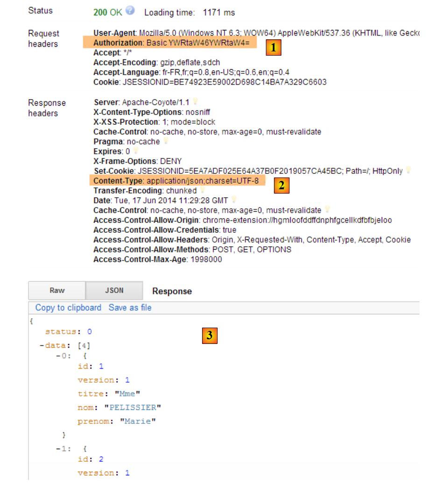 |
- em [1], o cabeçalho de autenticação HTTP;
- em [2], o servidor retorna uma resposta JSON;
- em [3], a lista de médicos.
Vamos agora tentar uma solicitação HTTP com um cabeçalho de autenticação incorreto. A resposta é então a seguinte:
 |
- em [1] e [3]: o cabeçalho de autenticação HTTP;
- em [2]: a resposta do serviço web;
Agora, vamos testar o usuário user / user. Ele existe, mas não tem acesso ao serviço web. Se executarmos o programa de codificação Base64 com os dois argumentos [user user]:
 |
obtemos o seguinte resultado:
 |
- em [1] e [3]: o cabeçalho de autenticação HTTP;
- em [2]: a resposta do serviço web. Ela é diferente da anterior, que era [401 Unauthorized]. Desta vez, o usuário se autenticou corretamente, mas não possui permissões suficientes para acessar o URL;
2.15. Conclusion
Vamos relembrar a arquitetura geral de nossa aplicação cliente/servidor:
 |
Um serviço web seguro já está operacional. Veremos que ele precisará ser modificado devido a problemas que surgirão durante a construção do cliente Angular JS. Mas vamos esperar até encontrar o problema para resolvê-lo. Agora, vamos construir o cliente Angular que oferecerá uma interface web para gerenciar as consultas médicas.